Overview
Identity Guardian provides secure, frictionless device access while safeguarding user data. To accommodate diverse operational workflows, the application offers two primary device deployment architectures, each with distinct authentication workflows.
- Shared Device: For environments where multiple users share a device pool. Users can unlock a device by scanning a provisioned barcode or tapping an NFC card containing encrypted credentials, followed by optional verification methods (facial biometrics, passcode, or SSO). Alternatively, if Guardian Safe is configured, users can bypass physical credentials entirely and authenticate directly via SSO or a Zebra DNA Cloud Passcode.
- Personally Assigned Device: For dedicated, single-user devices. After initial enrollment, access is streamlined using facial biometrics, SSO or a local passcode. Personal data is securely embedded within the Android framework, ensuring complete privacy and preventing organizational access.
To use Identity Guardian, users must enroll in the system before signing in to authenticate their devices. Integration with identity providers (IdPs) enables single sign-on (SSO), streamlining application access with a single login.
Identity Guardian can be installed and configured using one of the following methods:
- Zebra DNA Cloud: Navigate to My Apps > Zebra Collection to install and manage the application.
- Enterprise Mobility Management (EMM) system: Administrators can configure Identity Guardian using Managed Configurations. This enables the setup of usage policies, device controls, and customized device restrictions for secure and tailored access.
The Zebra DNA Cloud dashboard provides administrators with actionable insights, such as sign-in/sign-out events and usage durations, fostering accountability and efficient management. These insights help organization ensure operational efficiency and accountability in managing devices.
Device Usage Models
Identity Guardian offers Multi-Factor Authentication (MFA) across all deployment scenarios. Regardless of the Device Usage Model chosen, administrators can enforce customized security utilizing Single Sign-On (SSO), facial biometrics, and secure passcodes. Before deploying Identity Guardian, administrators must determine the appropriate Device Usage Model for their workforce. The configuration and deployment architecture rely on which model is selected.
For Shared Devices, there are two modes:
- Self-Enrollment requires users to register to the system on a dedicated device before using a separate authentication device for daily operations.
- Standard Enrollment assumes the designated enrollment device is already in a secure, supervised location.
| Usage Model | Target Environment | Deployment Architecture | Privacy & Storage |
|---|---|---|---|
| Shared Device (Standard Enrollment) | Multi-user shift environments | Two-device workflow:
|
Personal data is encrypted on a barcode or NFC card. Discarding the credential destroys the data. |
| Shared Device (Self-Enrollment) | Multi-user shift environments | Single device workflow: Consolidates both enrollment and daily authentication onto the same device. Requires a physical barcode or NFC card.* | Personal data is encrypted on a barcode or NFC card. Discarding the credential destroys the data. |
| Personally Assigned | A dedicated, single-user device | Single-user workflow where enrollment and authentication are handled on the assigned device. No barcode or NFC card is utilized. | Data is securely embedded within the isolated Android hardware framework. |
* Exception: A physical credential is not required if the device is configured to use Guardian Safe combined with an MPIN and either SSO or a Zebra DNA Cloud Passcode.
Credential Storage Mechanisms (Shared Devices)
Organizations deploying a shared device model must select a physical credential mechanism (barcode or NFC card) to store encrypted user data, ensuring secure and personalized access. Personal data is not stored in the cloud; it remains entirely localized to the physical credential.
An exception to physical credential storage applies specifically to the use of Guardian Safe combined with an MPIN and either SSO or a Zebra DNA Cloud Passcode.
User data is encrypted using an enrollment key. This key is an encrypted public key derived from the organization’s certificate and is applied via Identity Guardian Managed Configuration. For guidance on generating this key, refer to Enrollment Configuration. It is essential to ensure that the dedicated enrollment device is provisioned with the correct Enrollment Configuration prior to generating credentials.
Barcode Storage
User data is securely encrypted into a personal barcode format. Organizations can configure these barcodes to expire after a specific timeframe to enforce credential rotation.
- Standard Enrollment: The generated barcode is temporarily stored on the enrollment device within the
/enterprise/usr/Profilesfolder. It must be printed or shared via the zCreator app within 24 hours. After this period, the file is automatically purged to prevent data retention. - Self-Enrollment: The temporary storage mechanism is bypassed. The user must manually print or share the barcode immediately upon generating it on the device.
NFC Card Storage
User data is securely written to a compatible corporate NFC card. For daily use, personnel simply tap the NFC card to the device to authenticate and gain access. No additional authentication factors (such as facial scan or passcode entry) are required, unless configured by the admin.
- Standard Enrollment: The encrypted NFC payload is temporarily saved on the enrollment device and remains accessible via the zCreator application. This payload must be written to an NFC card within 24 hours. After 24 hours, the data is automatically purged.
- Self-Enrollment: The temporary storage mechanism is bypassed. The user must manually prompt the device to write the data to their NFC card immediately upon generation.
Requirements
Before beginning deployment, ensure the environment and devices meet the following requirements:
- Supported Hardware: Compatible Zebra devices. A front-facing camera is required for facial biometrics and an NFC reader is required for NFC authentication. For compatiable devices, see Zebra Support Portal.
- Operating System: Devices must run Android 11 or higher.
- Management Console: Access to aan Enterprise Mobility Management (EMM) system or Zebra DNA Cloud to deploy Managed Configurations.
- Enrollment State: Devices must be enrolled as Dedicated Device (Device Owner)
NOTE: Corporate-Owned, Personally-Enabled (COPE) enrolled devices are currently not supported.
- Enrollment State: Devices must be enrolled as Dedicated Device (Device Owner)
- Identity Provider (IdP): An active corporate IdP (such as Microsoft Entra ID, PingID, or OKTA) utilizing OAUTH and OAUTH+OIDC authentication protocols is required if deploying Single Sign-On (SSO) authentication.
- Licensing:
- Mobility DNA Enterprise license: Required for basic functionality on Zebra Professional-series devices.
- Identity Guardian license: Required for advanced features including facial biometric authentication, Single Sign-On (SSO), and device API support; see Licensing.
zCreator Requirements (Optional)
zCreator is a companion application that is required only if printing barcodes or formatting NFC authentication cards. It requires Identity Guardian version 2.2 or higher.
Supported Printers
- Zebra Models: ZD620, ZD621
- Canon Model: Canon PIXMA E560 Series (300 dpi)
NFC Card Specifications
- Compatible Card Types: Mifare, DESFire EV3, Salto
- Operating Frequency: NFC cards must operate at 13.56 MHz, the standard frequency for NFC technology.
- Supported Format: Only NDEF format is supported. Note that the application overwrites any existing data present on the card.
- Memory Requirements: The required data storage scales based on the number of facial captures:
- With 1 facial capture: ~1232 bytes
- With 2 facial captures: ~1744 bytes
- With 3 facial captures: ~2256 bytes
- Minimum Capacity: A minimum card capacity of 2 KB is required to successfully store user enrollment data.
Downloads & Update Management
Identity Guardian and its companion application, zCreator, are available through two primary distribution channels depending on the enterprise environment:
- Managed Google Play Store (Recommended): The standard method for Enterprise Mobility Management (EMM) deployments. Administrators approve and distribute the applications directly through the EMM console for seamless provisioning.
- Zebra Support Portal: For secure environments operating without Google Mobile Services (GMS) or those requiring manual APK deployment, download the installation files directly from the Zebra Support Portal.
Note: The installation order of Identity Guardian and zCreator does not affect functionality.
Google Play Store Updates
When utilizing the Managed Google Play Store for application distribution, Google Play Store updates are disabled by default starting with the April 2026 LifeGuard releases for Android 14 and Android 15. This change replaces the previous default-enabled state to prevent automatic updates from interrupting provisioning and to maintain better version control. For supported platforms and devices, see the Zebra Support Portal. While updates are disabled by default, administrators retain full control over application management.
Notes:
- This change also restricts standard update methods, including manual installation, manual updates via the Google Play Store, and Android Debug Bridge (ADB).
- This change is not applicable for Android 11 and Android 13, as Play Store updates are enabled by default on these versions.
Administrator Controls: Modify the default setting at any time using MX App Manager with the AllowApplicationUpgrade or DisallowApplicationUpgrade option with one of the following methods:
Configuration via MX App Manager: Use this method to submit the XML through the EMM platform to enable/disable automatic updates for Google Play:
- Enable Automatic Updates: Use the
AllowApplicationUpgradeoption. Download the Enable_AutoUpgrade_IG.xml. - Disable Automatic Updates: Use the
DisallowApplicationUpgradeoption. Download the Disable_AutoUpgrade_IG.xml.
- Enable Automatic Updates: Use the
Configuration via Zebra OEMConfig: If using Zebra OEMConfig with the EMM system, follow these steps:
In the EMM system, create a new setting profile using Zebra OEMConfig.
Find the System Configuration section.
Look for the Pass-Through Command field and copy/paste this code to enable automatic updates:
<wap-provisioningdoc> <characteristic version="10.3" type="AppMgr"> <parm name="Action" value="AllowApplicationUpgrade"/> <parm name="Package" value="com.zebra.mdna.els"/> </characteristic> </wap-provisioningdoc>
To disable automatic updates, use:
<wap-provisioningdoc> <characteristic version="10.3" type="AppMgr"> <parm name="Action" value="DisallowApplicationUpgrade"/> <parm name="Package" value="com.zebra.mdna.els"/> </characteristic> </wap-provisioningdoc>
Behavior Persistence Note: This setting persists after a device reboot or an OTA upgrade.
Alternative Update Methods: Even with Google Play updates disabled, applications can still be updated directly through the following methods:
- Zebra DNA Cloud: Centrally manage, schedule, and push Identity Guardian updates directly to the device fleet.
- EMM Deployment: Most EMMs supporting Android Enterprise management (Device Owner or Profile Owner mode) allow administrators to directly push application updates to devices, bypassing the Google Play Store.
- Zebra MX Deployment: The "Upgrade Action" within the Zebra MX App Manager can be used to upgrade applications via an EMM or the Zebra StageNow tool.
Prerequisites
Complete the following infrastructure and device-level configurations before deploying the Identity Guardian Managed Configurations.
1. Generate Custom Security Keys (Critical)
This section applies exclusively to
Shared Devices.
In Shared Device deployments, user data — including facial capture and passcodes - is secured using cryptography. To comply with enterprise security standards and ensure data privacy, administrators must replace the default keys with a custom RSA key pair and encrypt it using the Zebra Data Encryption Tool (DET) prior to EMM deployment
Generate a unique RSA key pair using OpenSSL or a trusted corporate Certificate Authority (CA) before deploying the application.
- Enrollment Key (Public): Deployed within the Enrollment profile. The application utilizes this key to securely encrypt the user's data into the generated barcode or NFC credential.
- Authentication Key (Private): Deployed within the Authentication profile. The application utilizes this key to locally decrypt the user data from the credential during the login process.
Cryptographic Key Rotation (Alternate Key)
To allow organizations to update their security keys without disrupting active users, Managed Configuration includes an Alternate Authentication Key parameter. During a key rotation event, deploying the new key as the Alternate establishes a migration window where both the previous and new keys remain active. This ensures zero downtime for shift workers holding credentials generated under the previous key architecture. This feature is configured within the Authentication Configuration.
2. Configure Single Sign-On (SSO) (Optional)
This section is mandatory for
Shared Device (Self-Enrollment), but optional forShared Device (Standard Enrollment). If SSO is not required, skip this step.
Identity Guardian acts as an authentication broker for Identity Providers (IdPs), such as Microsoft Entra ID, PingID, and Okta, utilizing OAuth 2.0 and OIDC protocols. By leveraging SSO, users log in only once to gain access to multiple applications, eliminating the friction of managing separate credentials for every app.
Microsoft Authenticator and Custom Chrome Tabs are supported to act as brokers for the SSO authentication process. Refer to the Configure SSO reference section for general IdP integration guidance, and review the SSO Requirements before proceeding.
Continuous SSO Access
To eliminate repetitive login prompts during an active shift, administrators can configure the system to require full SSO authentication only once, utilizing faster localized methods (like facial biometrics or a passcode) for subsequent screen unlocks. For detailed implementation steps, refer to Continuous SSO Access in the User Guide.
3. Disable Safe Mode
Identity Guardian is bypassed if a user boots the device into Safe Mode. Deploy a Zebra StageNow profile or EMM custom XML to disable Safe Mode on all target devices before application deployment. Download the required XML and StageNow barcode based on the Android version:
4. Configure DataWedge
Applies when barcodes are used for authentication.
Identity Guardian relies on Zebra's built-in DataWedge app to scan physical barcode credentials seamlessly. A default profile named "IdentityGuardian" is automatically generated upon application initialization.
For most deployments, this default is sufficient. However, if an organization requires specific scanner behaviors, administrators must manually create and export a custom profile.
Whether customizing the default profile or building a new one, follow the steps below. When exporting the final configuration via the DataWedge database file, ensure the active "IdentityGuardian" profile is included alongside any other enterprise scanner profiles.
- Open DataWedge.
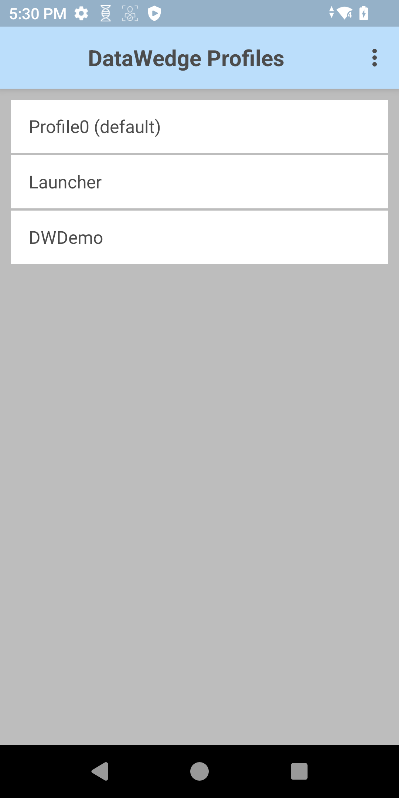
- From the top right options menu, select New Profile.
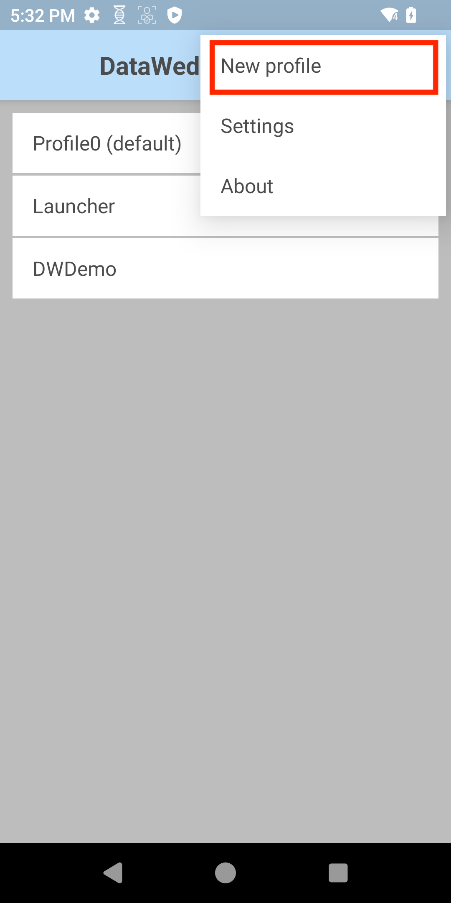
- Enter a profile name, such as "IdentityGuardian."
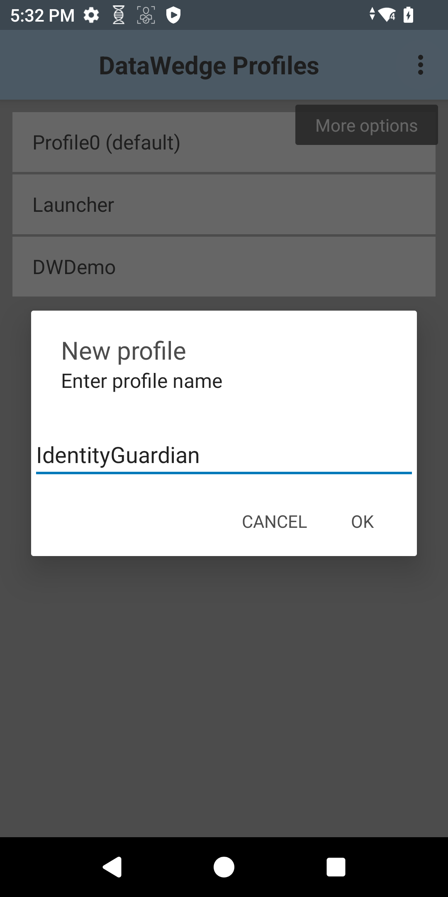
- Locate the new profile in the list and tap its name.
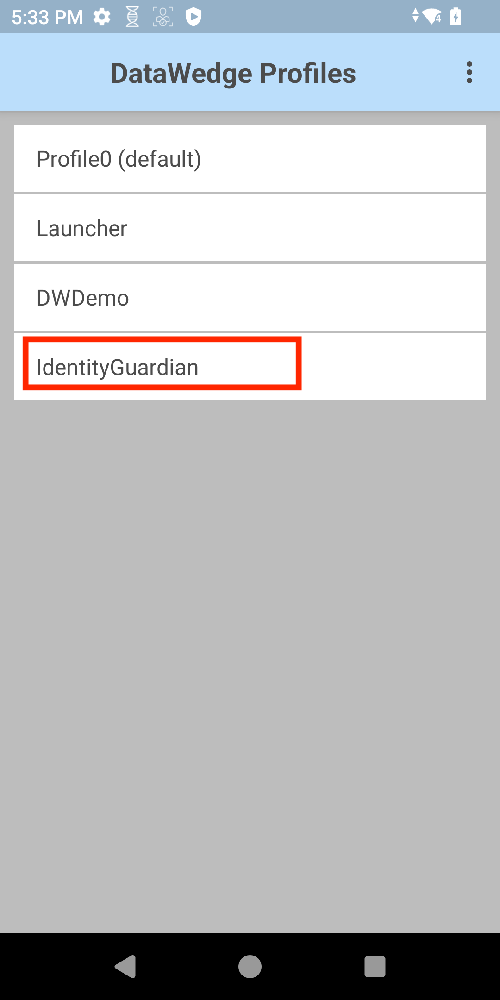
- The profile is enabled by default. Tap Associated apps.
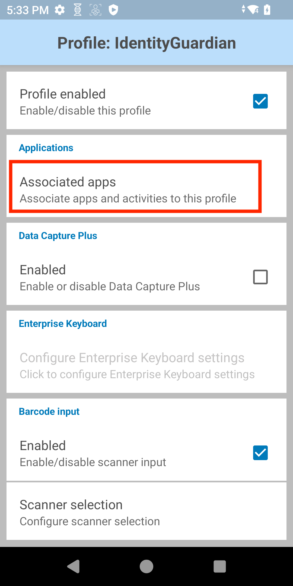
- From the top right options menu, select New app/activity.
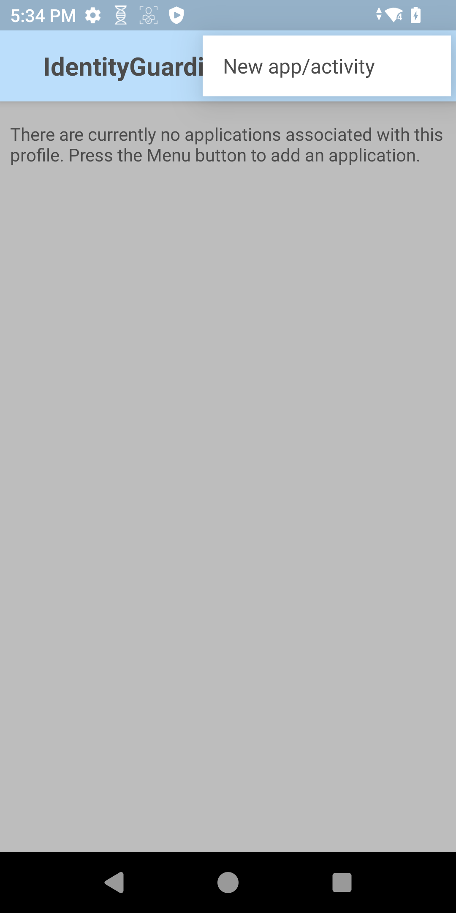
- Scroll through the app list and select com.zebra.mdna.els.
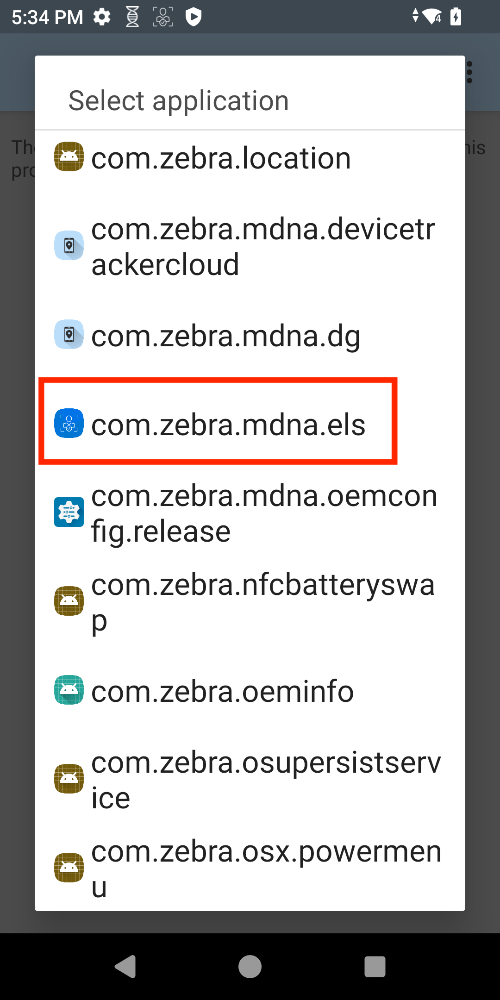
- Activities associated with the app is visible. From this list, select:
- com.zebra.mdna.els.authentication.AuthenticationActivity
- com.zebra.mdna.els.enrollment.LogoutActivity
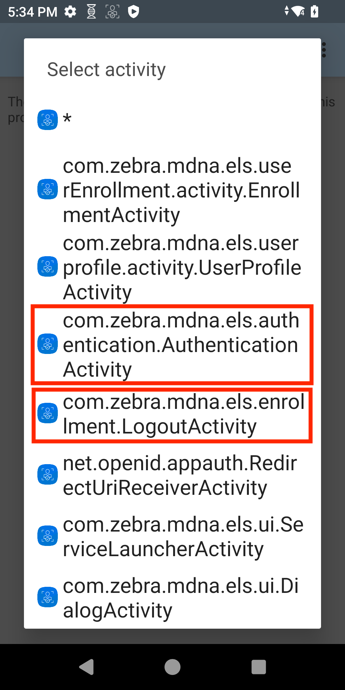
- The selected activities are displayed.
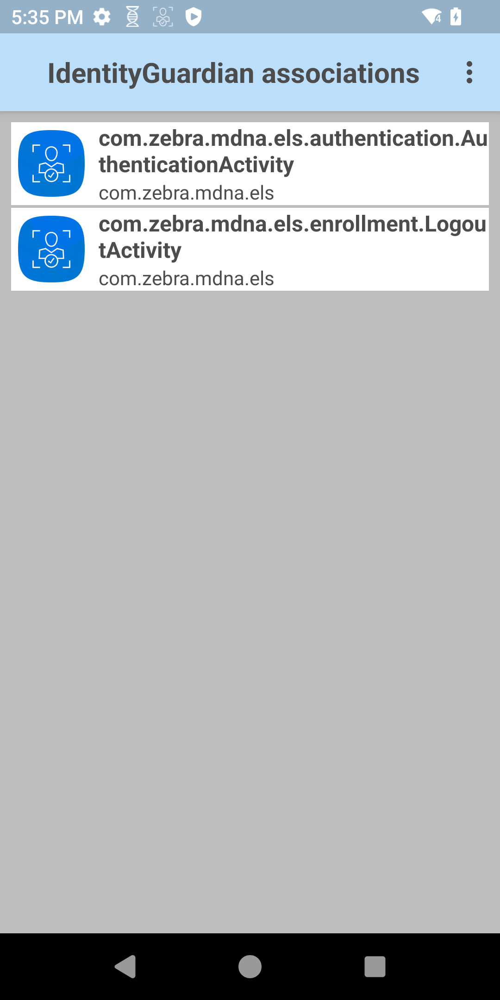
- Tap back to return to the IdentityGuardian profile screen. Ensure Barcode Input is enabled, then tap Scanner selection.
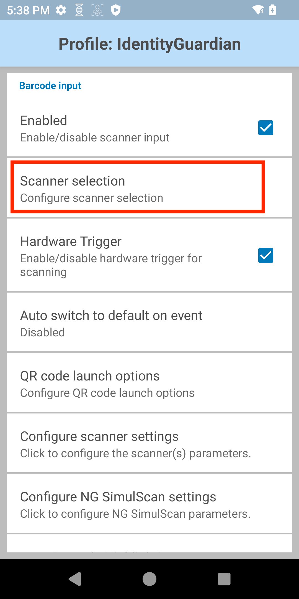
- Ensure that the Auto option is selected.
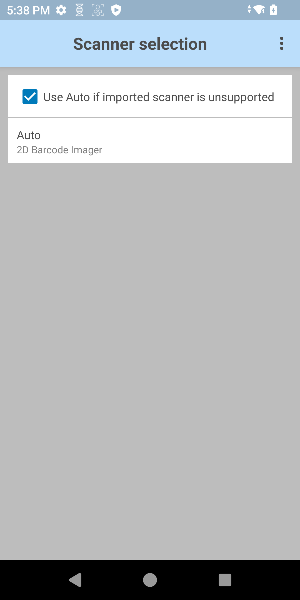
- Tap back to return to the IdentityGuardian profile screen. Tap on Configure scanner settings.
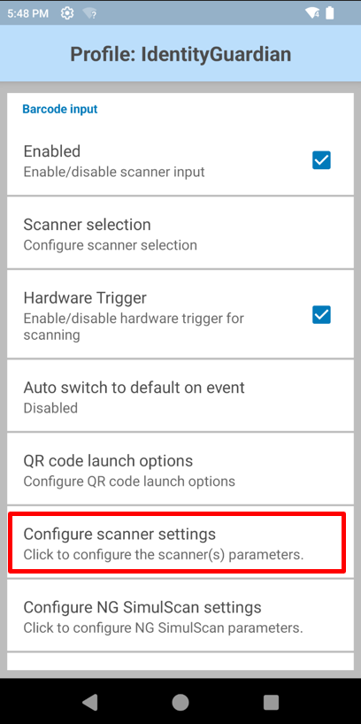
- Tap on Reader params.
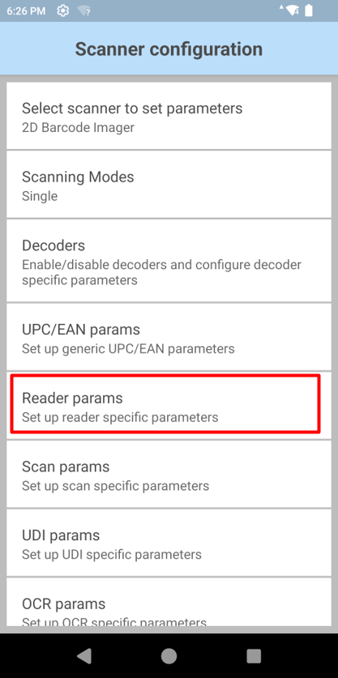
- Tap on Beam timer.
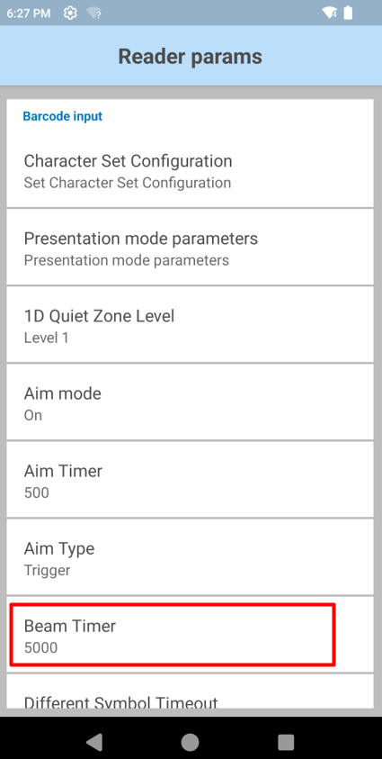
- Set the Beam Timer to 15000 ms and click OK.
- Note: Zebra recommends this 15-second timeout to allow sufficient time for scanning. This value, already set in the default profile, is particularly helpful in environments with vehicle-mounted devices where more time maay be needed to align the scanner.
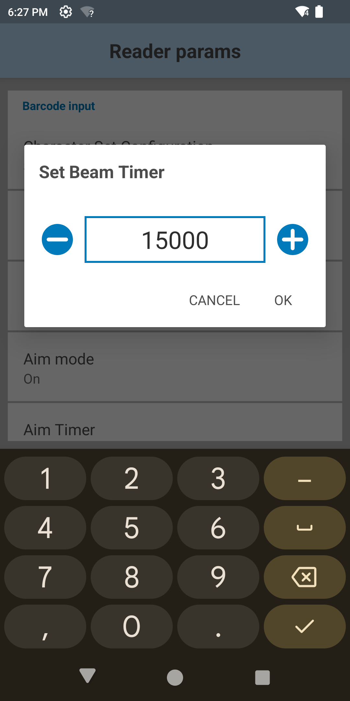
- Note: Zebra recommends this 15-second timeout to allow sufficient time for scanning. This value, already set in the default profile, is particularly helpful in environments with vehicle-mounted devices where more time maay be needed to align the scanner.
- Tap the back button to return to the IdentityGuardian profile screen. Scroll to Keystroke output and ensure it is disabled.
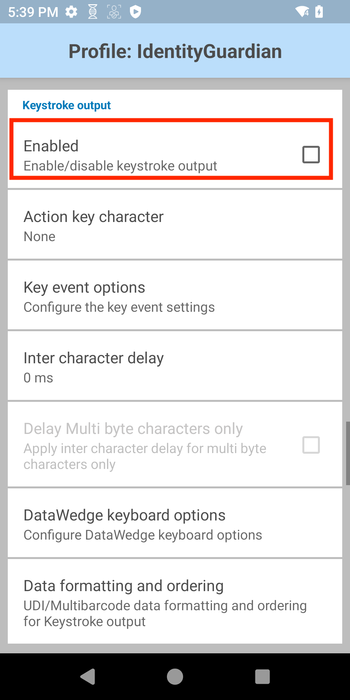
- Scroll to Intent Output and ensure it is enabled. Tap Intent action.
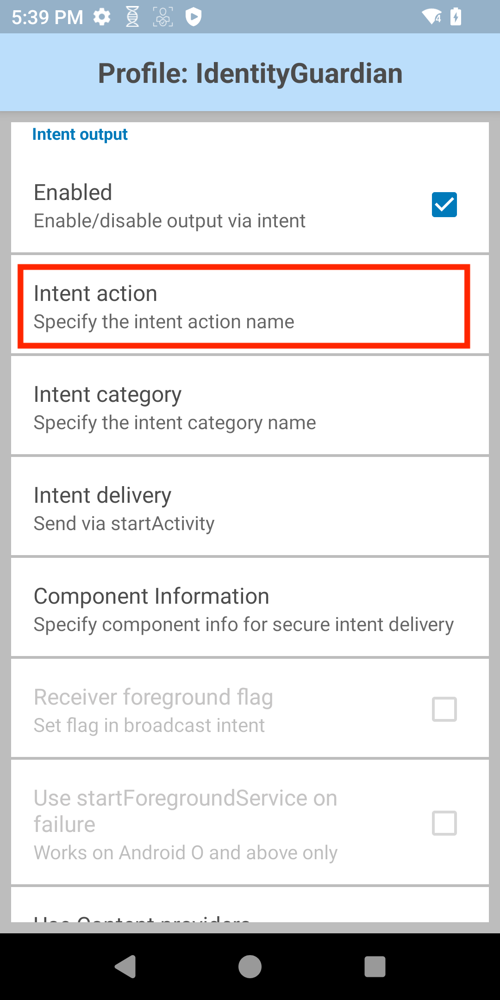
- Enter the intent action name "com.zebra.mdna.els.DATA" and tap OK.
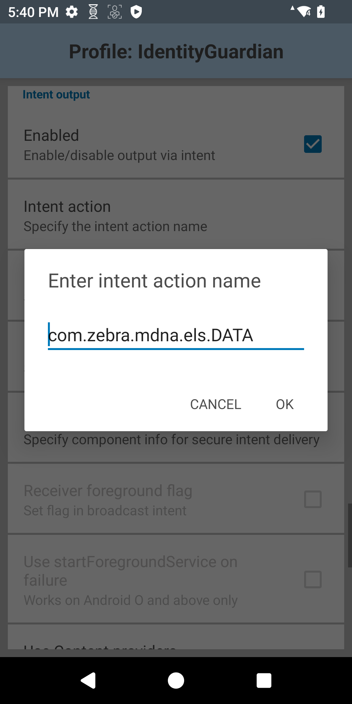
- Tap Intent category. Enter "android.intent.category.DEFAULT" and tap OK.
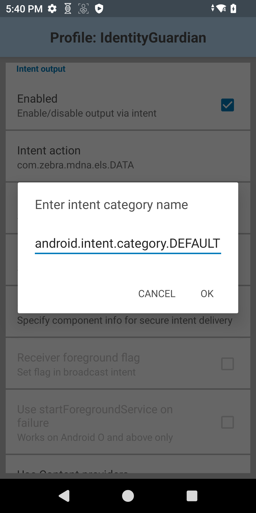
- Tap Intent delivery. Select Broadcast intent.
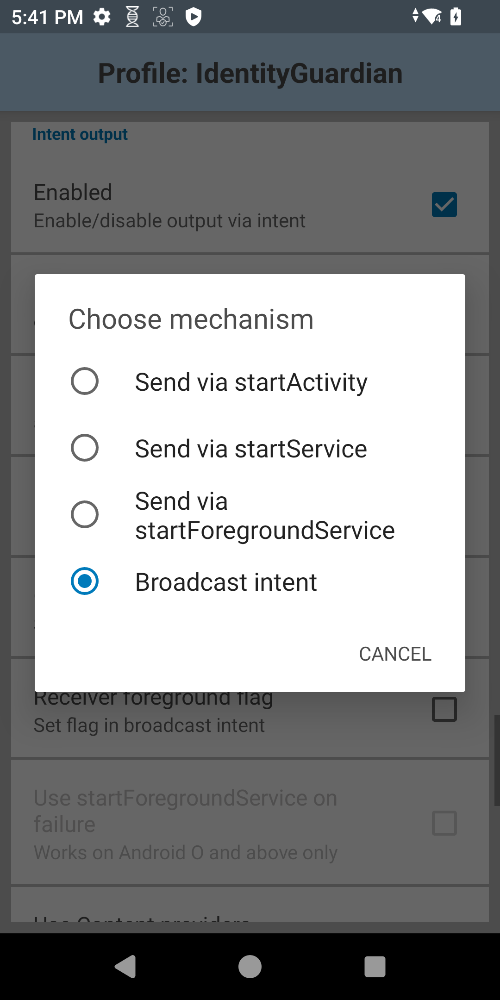
- Verify all settings.
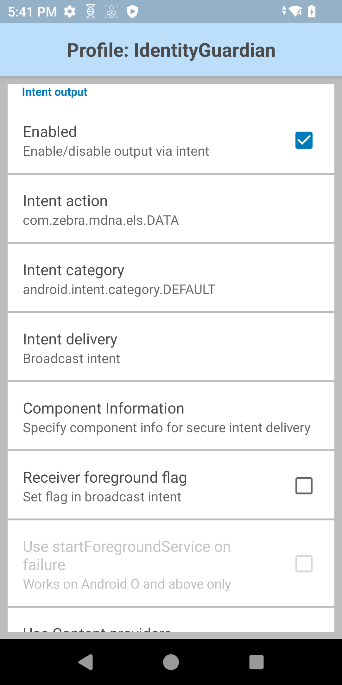
- Export the profile and deploy it to the devices. For instructions, see DataWedge Profile Deployment.
5. Distribute Applications
Applies to devices enrolled in Android Enterprise receiving Managed Configurations via the Managed Google Play Store.
Approve and distribute the following packages via the Managed Google Play Store to the target device groups based on the chosen deployment architecture:
- Zebra Identity Guardian (
com.zebra.mdna.els): The core authentication application. - zCreator (
com.zebra.mdna.zcreator): Required only if printing barcodes or formatting NFC cards. - Microsoft Authenticator (
com.microsoft.identity.client): Required only if using Entra ID SSO.
Note: When utilizing the 42Gears EMM system, apps installed via Zebra DNA Cloud in app update mode must be set as high priority.
6. Auto-Launch Intent (Critical)
Identity Guardian must be launched at least once after installation for Managed Configurations to be applied.
Managed Configurations remain inactive until the application initializes. If the EMM platform cannot automatically launch applications immediately post-installation, use one of the following methods to initialize the app:
Execute via ADB Shell (e.g., from another app):
adb shell am start -n com.zebra.mdna.els/com.zebra.mdna.els.userEnrollment.activity.EnrollmentActivityDeploy via EMM Intent:
mode=explicit,broadcast=false,action=android.intent.action.MAIN,package=com.zebra.mdna.els,class=com.zebra.mdna.els.userEnrollment.activity.EnrollmentActivity
7. Configure zCreator (Print & Share Barcode)
Applies when barcodes are used for authentication.
The zCreator app, a companion to Identity Guardian, is utilized exclusively within Shared Device environments to provision physical user credentials.
During the enrollment phase (for both Standard and Self-Enrollment workflows), zCreator securely encrypts captured facial vectors or passcodes and generates a unique 2D barcode for the user. The application provides features such as on-screen preview, resizing, and direct printing to ensure readability, while also allowing the barcode to be securely shared via Gmail or Bluetooth.
Note: zCreator also handles NFC credential writing. If deploying NFC cards instead of barcodes, skip this printing configuration and refer to the NFC-Based Enrollment section.
Key features:
- Streamlined Printing Options: Print barcodes directly to supported Zebra and Canon printers via WiFi, Bluetooth, and Ethernet, with:
- Fixed barcode sizes (3 cm, 4 cm, 5 cm, 6 cm) for consistent printing.
- Centralized admin Managed Configurations for streamlined deployment.
- Direct printing to supported Zebra and Canon printers for faster workflows.
- NFC Tap & Pair for instant connection with NFC-enabled Zebra printers.
- Barcode Sharing:
- Securely share barcodes using Gmail, Bluetooth, Canon Print, or by saving them as a PDF through the Print option.
For guidance on installation and configuration, refer to the Self-Enrollment and Standard Enrollment sections. Instructions for manual configuration post-installation are provided below.
Important Notes for Printing Operation:
- For compatible printers, see Requirements.
- The printer and device must be on the same network.
- Adjust the QR Code Size (specific to Zebra printers) and printer paper size (applicable to all compatible printers) as needed to prevent the barcode from being cropped.
- Calibrate the printer for proper printing.
Install & Configure Printer Apps:
- Canon Printers: For printing with Canon printers, download and install the Canon Print application from the Play Store. Proper calibration and adjustment of the Canon printer settings are essential to ensure the barcode is printed correctly.
- Zebra Printers: For printing with Zebra printers, download and install the Zebra Printer Utility application from the Play Store. Recommended Settings for QR Code printing:
- Printing speed: Should not exceed 4.
- Darkness: Set between 10 and 15.
- Supported paper sizes:
- 2-inch (5 cm) width paper: Allows QR Codes of 3 or 4 cm with accompanying text.
- 3-inch (7.62 cm) width paper: Allows QR Codes of 3, 4, 5, and 6 cm with accompanying text.
zCreator Configuration Procedure
To configure zCreator, the Settings menu is accessible by tapping on the menu icon at the top left and selecting Settings.
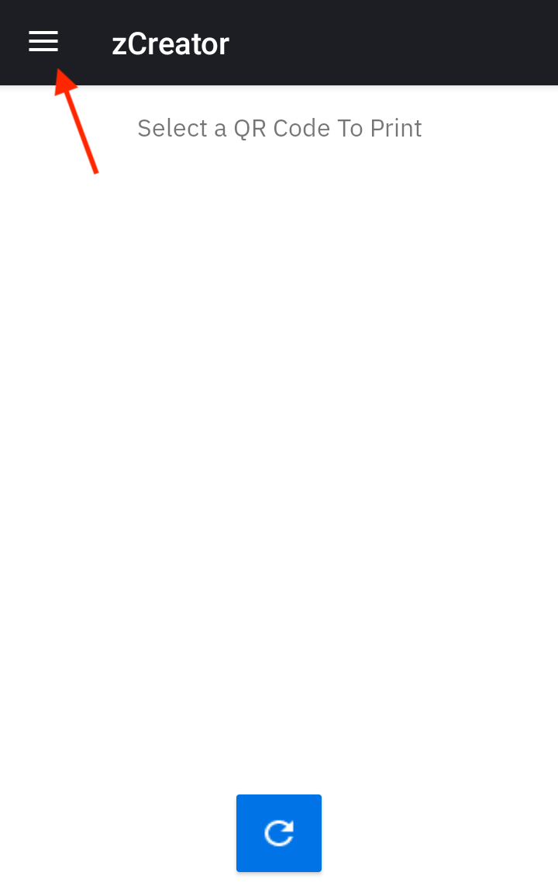 |
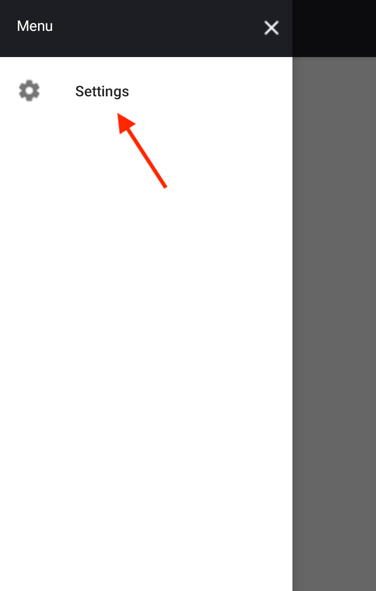 |
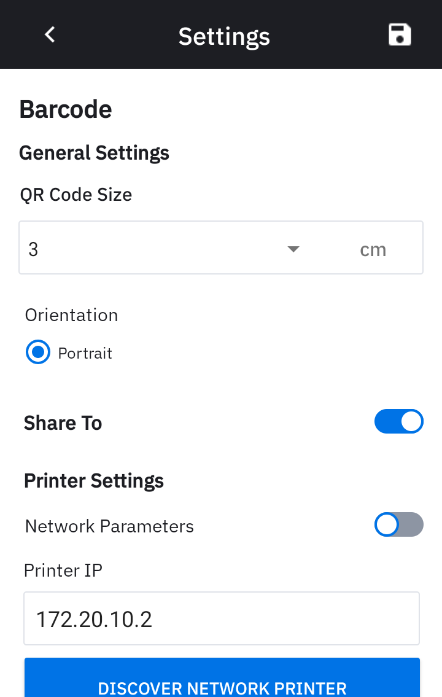 |
||
| Access to zCreator Settings | ||||
Available options:
Adjust the QR Code Size: This setting only applies when printing to Zebra printers. It does not affect the size of the QR Code displayed in the Preview screen.
Specify the size of the QR Code to print.
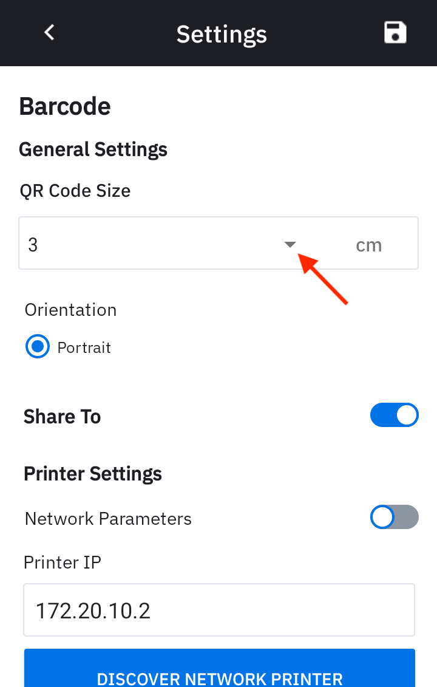
Set network printer settings: Toggle on Network Parameters and enter the IP address of the network printer in IPv4 format (e.g.,
192.168.1.100). If this is not known, tap Discover Network Printer to perform a search for the network printer and allow the user to select the desired printer.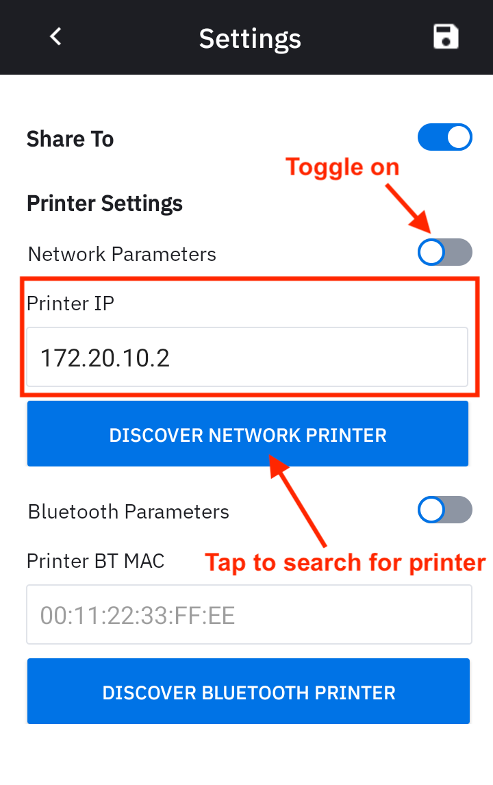
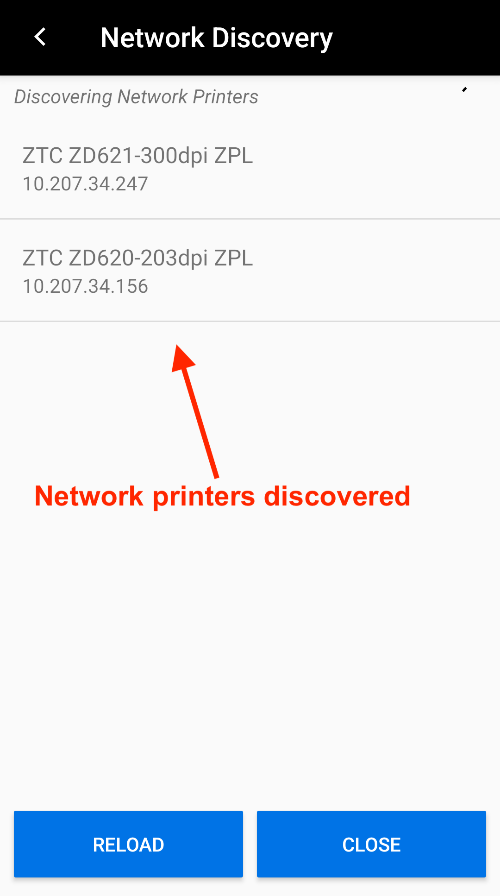
Network Printer Settings Search for Network Printer Set Bluetooth printer settings:
Toggle on Bluetooth Parameters and enter the Bluetooth printer MAC address in the format
XX:XX:XX:XX:XX:XX, whereXis a hexadecimal digit (0-9, A-F). If this is not known, tap Discover Bluetooth Printer to perform a search for the Bluetooth printer and allow the user to select the desired printer.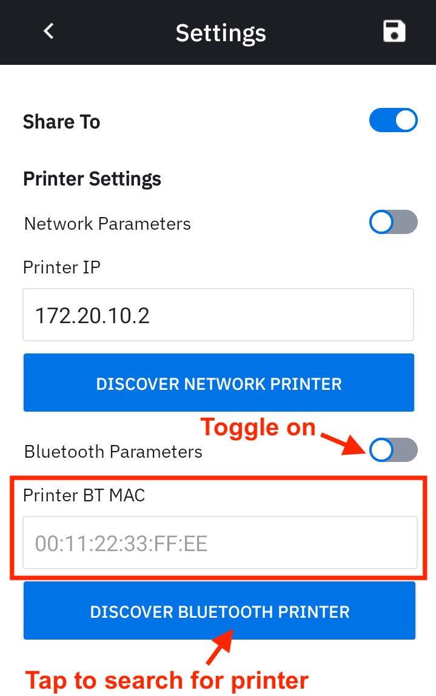
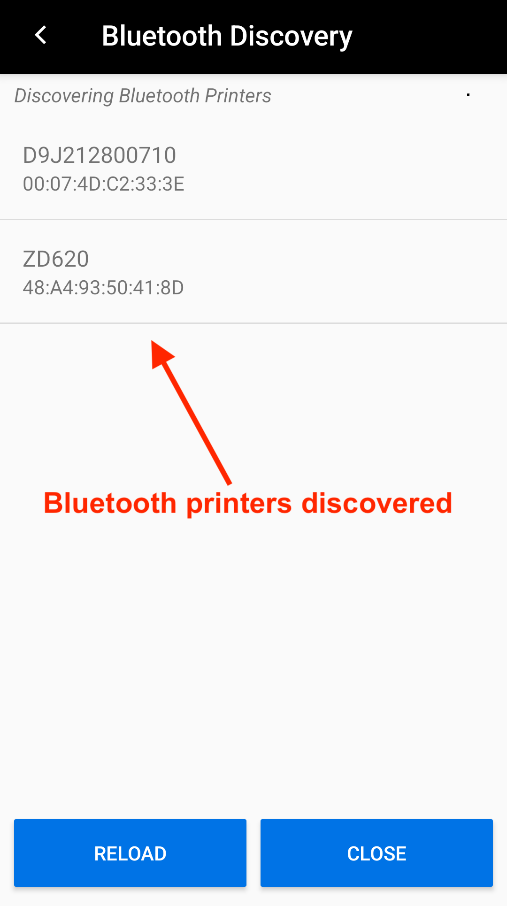
Bluetooth Printer Settings Search for Bluetooth Printer Share-To:
Toggle on Share-to and select the desired method to share. The barcode file name is
shared_image.png.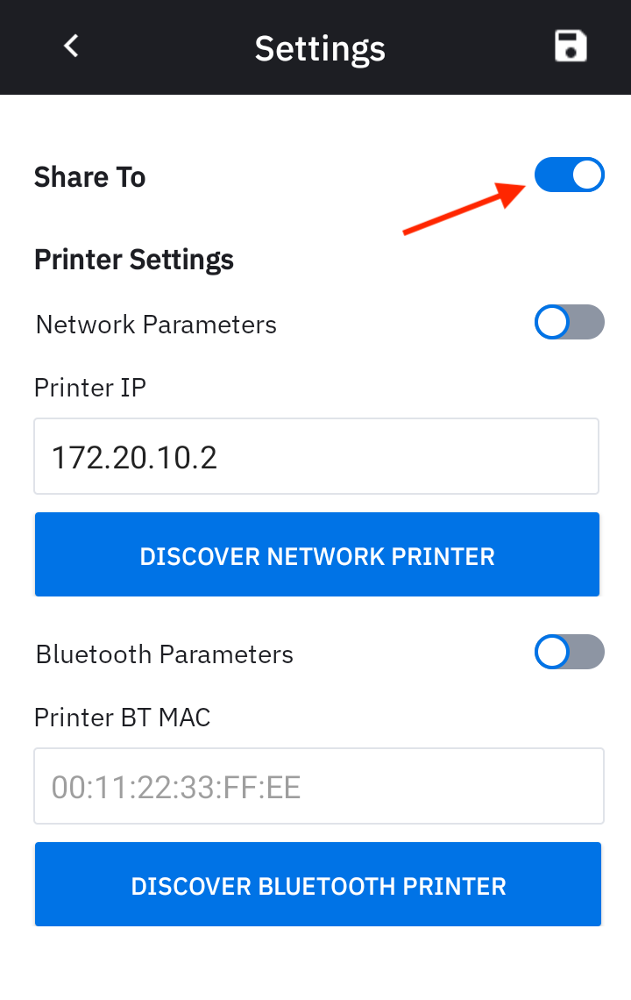
Usage Note: When a user modifies the zCreator settings and saves the changes, these modifications should not persist after the app is terminated. The settings are designed to revert to the configurations set by the admin. However, in some cases, the user changes may persist unexpectedly after the app is closed. To resolve this issue, the admin should redeploy the settings.
8. EMM Allowlisting
Applies exclusively to
Shared Devicesdeployed in kiosk mode.
For Shared Device deployments utilizing a restricted launcher (such as an EMM kiosk, or Check-In/Check-Out with Device Guardian), administrators must explicitly allowlist the following packages and activities based on specific business requirements. This ensures Identity Guardian can initiate its authentication workflows prior to the kiosk launcher taking control.
Configuration Note: Add only the activities required for the specific deployment scenario. For example:
- Exclude Chrome and Microsoft SSO activities unless the Shared Device sign-in flow specifically uses Microsoft SSO via Chrome Custom Tabs.
- Allowlist the zDNA activity only if the deployment requires zDNA to launch directly from the kiosk or Check-in/Check-out screen.
| Purpose | Package Name | Activity |
|---|---|---|
| Identity Guardian Authentication | com.zebra.mdna.els |
com.zebra.mdna.els.authentication.AuthenticationActivity |
| Guardian Safe: Save Credentials | com.zebra.mdna.els.passwordvault.SaveCredentialActivity |
|
| Guardian Safe: Edit Credentials Dialog | com.zebra.mdna.els.passwordvault.AlterDialogActivity |
|
| Guardian Safe Settings | com.zebra.mdna.els.passwordvault.GuardianSafeSettingsActivity |
|
| Guardian Safe: List Credentials | com.zebra.mdna.els.passwordvault.ListCredentialActivity |
|
| zDNA Client Launch (if required by deployment workflow) | com.zebra.zebradna |
com.zebra.zebradna.MainActivity |
| Microsoft SSO with Chrome: Browser Launcher | com.android.chrome |
org.chromium.chrome.browser.document.ChromeLauncherActivity |
| Microsoft SSO with Chrome: First Run | org.chromium.chrome.browser.firstrun.FirstRunActivity |
|
| Microsoft SSO with Chrome: Custom Tab | org.chromium.chrome.browser.customtabs.CustomTabActivity |
|
| Microsoft SSO Broker Authorization | com.zebra.mdna.els |
com.microsoft.identity.common.internal.providers.oauth2.AuthorizationActivity |
| Microsoft SSO Broker Browser Tab | com.microsoft.identity.client.BrowserTabActivity |
Managed Configurations Setup
This section provides general guidance for implementing Managed Configurations through an EMM or Zebra DNA Cloud. These instructions focus on the mandatory baseline parameters required to establish core functionality.
Select the deployment path (A, B, or C) that matches the chosen Device Usage Model. Adjust any unlisted parameters based on organizational policies, and push the final configuration to the target devices.
Deployment Resources:
- Managed Configuration Reference: The steps below serve as a high-level guide for basic deployment. For detailed descriptions of every available parameter, refer to the comprehensive Managed Configuration guide.
- Common Configuration Workflows: Guides how to combine baseline parameters to achieve standard operational goals, such as Multi-Factor Authentication (MFA), NFC enrollment, and offline authentication.
- Supplemental Configurations Reference: An index of advanced security capabilities and niche operational features — such as Auto Logout, Guardian Safe, and Device Alarms — with direct links to implementation instructions in the User Guide.
- EMM Video Tutorials: Consult the EMM Guidance section to review step-by-step deployment videos specifically tailored to the EMM platform.
Path A: Shared Device (Standard Enrollment)
This model requires creating separate Managed Configuration profiles assigned to two distinct device groups: the dedicated enrollment device and the daily-use authentication devices. An additional zCreator profile must be configured for the use of barcodes or NFC cards.
Enrollment Profile Settings: Deploy this profile to the dedicated Enrollment Device group.
- Usage Mode:
- Application Mode: ENROLLMENT
- Enrollment Configurations:
- Enrollment Key: [Enter the enrollment key to encrypt user data.]
- Number of facial images to be enrolled: [This applies only if facial authentication is required (Allow facial opt-out is set to false). For barcode printing, enter 1, as it is the only valid value for this scenario. For other use cases, enter the appropriate value based on your requirements.]
- Allow opening barcode during enrollment: [Enable this option to allow barcode printing during the enrollment process. This displays the Print button at the last step of enrollment.]
- Enrollment Storage Method: [Select NFC or Barcode]
zCreator Profile Settings: Deploy this profile alongside the Enrollment Profile if utilizing physical credentials (e.g., barcode, NFC).
- Settings Access: [Set to 1 to allow user access to zCreator settings, otherwise set to 2 to restrict access.]
- General Settings:
- QR Code Size: [Specify the size of the QR Code to be printed.]
- Orientation: [Specify the orientation for the printed barcode.]
- Share-to Settings:
- Sharing: [Set to 1 to allow the user to share the barcode from within the app, otherwise set to 0 to disable.]
- Printer Settings: Configure printer settings for network (WiFi or Ethernet) or Bluetooth printing, if required:
- Network Settings: [Set to 1 to allow the user to change the network printer configuration, otherwise set to 0.]
- IP Address: [Enter the IP address of the network printer in IPv4 format (e.g.,
192.168.1.100).] - Bluetooth Settings: [Set to 1 to allow the user to change the Bluetooth printer configuration, otherwise set to 0.]
- Bluetooth MAC Address: [Enter the Bluetooth printer MAC address in the format
XX:XX:XX:XX:XX:XX, whereXis a hexadecimal digit (0-9, A-F).]
Launch Identity Guardian: Open Identity Guardian on the enrollment device. Instruct users to establish their credentials using this designated device.
Authentication Profile Settings: Deploy this profile to the daily-use Authentication Device group.
- Usage Mode:
- Application Mode: AUTHENTICATION
- Lock Screen Configuration:
- Apps Allowed On Lock Screen: [Enable this option to allow specific applications to be displayed on the lock screen. For each app, provide the necessary details (e.g., Package Name, Activity Name); see Lock Screen Allowlisting.]
Once deployed, users can authenticate and sign in to their shared device utilizing the credentials generated during enrollment.
Path B: Shared Device (Self-Enrollment)
This model uses ONE unified Managed Configuration profile applied to all daily-use devices for enrollment and authentication.
Unified Profile Settings:
- Usage Mode:
- Application Mode: AUTHENTICATION
- Enrollment Configuration:
- Number of facial images to be enrolled: [This applies only if facial authentication is required (Allow facial opt-out is set to false). For barcode printing, enter 1, as it is the only valid value for this scenario. For other use cases, enter the appropriate value based on your requirements.]
- Enrollment Storage Method: [Select NFC or Barcode]
- Authentication Configuration:
- Comparison Source: [Select the appropriate option, e.g. Barcode, Cloud, NFC, Device Storage; see Comparison Source.]
- Authentication Factor: [SSO must be configured as an Authentication Factor.]
- Authentication Key: [enter the Authentication Key to decrypt the user's personal information.]
- Lock Screen Configuration:
- Allow Self Enrollment:
- Secure Self Enrollment: true
- User Verification: SSO
- Apps Allowed On Lock Screen: [Enable this option to allow specific applications to be displayed on the lock screen. The zCreator app must be added to the allowlist, along with any other apps that require lock screen access. For each app, add the corresponding application details (e.g., Package Name, Activity Name); see Lock Screen Allowlisting.]
- Allow Self Enrollment:
zCreator Profile Settings: Deploy this profile alongside the unified profile if utilizing physical credentials (e.g., barcode, NFC).
- Settings Access: [Set to 1 to allow user access to zCreator settings, otherwise set to 2 to restrict access.]
- General Settings:
- QR Code Size: [Specify the size of the QR Code to be printed.]
- Orientation: [Specify the orientation for the printed barcode.]
- Share-to Settings:
- Sharing: [Set to 1 to allow the user to share the barcode from within the app, otherwise set to 0 to disable.]
- Printer Settings: Configure printer settings for network (WiFi or Ethernet) or Bluetooth printing, if required:
- Network Settings: [Set to 1 to allow the user to change the network printer configuration, otherwise set to 0.]
- IP Address: [Enter the IP address of the network printer in IPv4 format (e.g.,
192.168.1.100).] - Bluetooth Settings: [Set to 1 to allow the user to change the Bluetooth printer configuration, otherwise set to 0.]
- Bluetooth MAC Address: [Enter the Bluetooth printer MAC address in the format
XX:XX:XX:XX:XX:XX, whereXis a hexadecimal digit (0-9, A-F).]
Path C: Personally Assigned Device
This model uses one unified profile applied to the dedicated user device. Cryptographic keys and DataWedge configurations are ignored in this mode, as data remains locked within the Android keystore.
Unified Profile Settings:
- Usage Mode:
- Application Mode: PERSONALLY_ASSIGNED
- Configure all necessary Managed Configuration settings, such as Enrollment, Authentication, and SSO Authentication.
Lock Screen Allowlisting
If utilizing Identity Guardian's lock screen alongside third-party applications or plugins, those specific applications must be explicitly permitted to run in the foreground. Otherwise, Identity Guardian will block them.
Under the Lock Screen Configuration, for Apps Allowed On Lock Screen input the specific Package Names and Activity Names required for the workflow:
| Purpose | Package Name | Activity Name |
|---|---|---|
| Display the barcode print preview | com.zebra.mdna.zcreator | com.zebra.mdna.zcreator.PreviewActivity |
| android | com.android.internal.app.ChooserActivity | |
| com.android.intentresolver | com.android.intentresolver.ChooserActivity | |
| Print the barcode | com.android.bips | com.android.bips.ImagePrintActivity |
| com.android.bips | ImagePrintActivity | |
| com.android.printspooler | com.android.printspooler.ui.PrintActivity | |
| com.android.printspooler | com.android.printspooler.ui.SelectPrinterActivity | |
| NFC Tap & Pair | com.zebra.mdna.zcreator | com.zebra.mdna.zcreator.NFCPrinterConnectionActivity |
| NFC Tag Writing | com.zebra.mdna.zcreator | com.zebra.mdna.zcreator.NfcEnrollmentActivity |
| Bluetooth Printing | com.android.settings | com.android.settings.bluetooth.BluetoothPairingDialog |
| com.android.settings | com.android.settings.bluetooth.DevicePickerActivity | |
| com.android.bluetooth | com.android.bluetooth.opp.BluetoothOppBtEnableActivity | |
| Share to Canon | jp.co.canon.bsd.ad.pixmaprint | jp.co.canon.bsd.ad.pixmaprint.view.activity.PrintPreviewActivity |
| jp.co.canon.bsd.ad.pixmaprint | jp.co.canon.bsd.ad.pixmaprint.view.activity.AbpActivity | |
| jp.co.canon.bsd.ad.pixmaprint | jp.co.canon.bsd.ad.pixmaprint.view.activity.SearchPrinterActivity | |
| jp.co.canon.bsd.ad.pixmaprint | jp.co.canon.bsd.ad.pixmaprint.EulaActivity | |
| com.google.android.permissioncontroller | com.android.permissioncontroller.permission.ui.GrantPermissionsActivity | |
| jp.co.canon.bsd.ad.pixmaprint | jp.co.canon.bsd.ad.pixmaprint.view.ijprintsetting.IJPrintSettingActivity | |
| jp.co.canon.bsd.ad.pixmaprint | jp.co.canon.bsd.ad.pixmaprint.view.printing.IJPrintingActivity | |
| Share to Gmail | com.google.android.gm | com.google.android.gm.welcome.WelcomeTourActivity |
| com.google.android.gm | com.google.android.gm.setup.AccountSetupFinalGmail | |
| com.google.android.gms | com.google.android.gms.auth.uiflows.minutemaid.MinuteMaidActivity | |
| com.google.android.gm | com.google.android.gm.welcome.SetupAddressesActivity | |
| com.google.android.gm | com.google.android.gm.ComposeActivityGmailExternal | |
| com.google.android.gm | com.google.android.gm.ConversationListActivityGmail | |
| com.google.android.gm | com.google.android.gm.compose.ComposeActivityGmailExternal | |
| com.google.android.gms | com.google.android.gms.setupservices.GoogleServicesActivity | |
| com.google.android.gms | com.google.android.gms.auth.uiflows.addaccount.PreAddAccountActivity | |
| com.google.android.documentsui | com.android.documentsui.picker.PickActivity |
Common Configurations
The following use cases represent common operational requirements and detail the specific Managed Configuration parameters required to achieve them.
User Enrollment and Onboarding
This section covers how employee identities and credentials are initially established within the system.
Customizing Enrollment Methods (Shared Devices)
Objective: Define exactly how users capture their credentials during the initial enrollment phase.
Implementation: Within the Enrollment Configuration, set the Storage Method to generate a barcode or prompt for an NFC write.
- With barcode, adjust the parameters for Facial Biometrics (image counts, opt-outs), mandate a Corporate PIN/Passcode.
- With NFC cards, bypass the facial biometric scan or passcode entry and unlock the device with the simple tap of the NFC card; for more information, see NFC Card.
Enforcing Corporate Compliance (Terms & Conditions)
Objective: Mandate that employees review and accept corporate IT usage policies or biometric data consent forms prior to accessing enterprise hardware.
Implementation: Within the Enrollment Configuration, enable the Terms and Conditions setting and input the custom corporate policy text.
Workflow: During the initial enrollment phase, the policy text displays. The user must explicitly accept the terms before the application captures biometric data or issues a credential.
NFC-Based Enrollment and Authentication
Objective: Enable touchless enrollment and daily authentication using corporate NFC cards instead of printed barcodes.
Implementation:
- In Enrollment Configuration, set Enrollment Storage Method to NFC.
- In Authentication Configuration set Comparison Source to NFC.
Workflow: During enrollment, the zCreator app prompts the device to write the encrypted data to the NFC card. For daily use, the user taps the NFC card to the back of the device to initiate the login process.
Zebra DNA Cloud-Based User Authentication
Objective: Authenticate users against a central database in Zebra DNA Cloud, eliminating the need for local, on-device biometric or barcode enrollment workflows.
Implementation: In Zebra DNA Cloud, follow instructions to Manage Users in zDNA. Within the Authentication Configuration, set the following, then select the remaining options as needed:
- Comparison Source: CLOUD
- Primary Authentication Factor: CLOUD_PASSCODE
- Fallback Authentication Method: ADMIN BYPASS PASSCODE
Workflow: Administrators centralize user accounts within the Zebra DNA Cloud console. On the device, the user enters a cloud passcode. Identity Guardian verifies the credentials directly against the backend database in real-time.
Daily Authentication and Access Control
This section dictates how users unlock devices during standard daily operations.
Multi-Factor Authentication (MFA) and Authentication Schemes
Objective: Enforce strict access control by requiring a customized mix of Single Sign-On (SSO), Passcodes, and Facial Biometrics.
Implementation: Within the Authentication Configuration, select SSO as the Primary Authentication Factor and select FACE or PASSCODE as the Secondary Authentication Factor.
Workflow: A user initiates login via SSO. Upon success, the system immediately requests the secondary factor. The device only unlocks when both factors are verified.
Managing Fast Access After Initial SSO Login
Objective: Streamline device unlocks during a shift without requiring full SSO authentication for every screen wake event.
Implementation: In SSO Authentication Configuration, set Temp ID to true.
Workflow: The user authenticates once using full SSO credentials at the start of a shift. For subsequent device unlocks during that same shift, the system bypasses the full SSO prompt and utilizes faster configured methods (like PIN or facial biometrics).
Operating in Disconnected Environments (Offline Authentication)
Objective: Ensure shift workers maintain device access when operating in facilities with dead zones or secure isolated networks.
Implementation: Utilize the Shared Device Model with the Enrollment Storage Method set to BARCODE or NFC. Ensure SSO is not mandated for the daily unlock sequence.
Workflow: Because encrypted biometric data is stored directly on the physical barcode or NFC card, the device processes the decryption and facial match entirely locally, requiring no backend network connection.
Shared Device and Shift Management
This section covers data privacy and session lifecycle management between different workers.
Enforcing Credential Rotation (Barcode Expiration)
Objective: Mitigate the security risk of lost or copied physical credentials by preventing the long-term use of printed barcodes.
Implementation: Within the Enrollment Configuration, set the Barcode Expiration parameter to a specific hourly limit (e.g., 12 or 24 hours).
Workflow: A generated barcode remains valid only for the configured duration. Once expired, subsequent authentication attempts fail, forcing the employee to generate a new credential.
Integrations and UI Customization
This section covers how Identity Guardian interacts with the broader software ecosystem.
Role-Based Access and Integrations (Enterprise Home Screen)
Objective: Customize the device experience and application availability based on an employee’s organizational role.
Implementation: Deploy Identity Guardian alongside Zebra Enterprise Home Screen (EHS). Ensure the Role Data retrieved during enrollment or SSO mapping matches the role definitions within EHS.
Workflow: Upon authentication, EHS dynamically reads the assigned role and displays a customized application launcher tailored specifically to that user’s access level.
Supplemental Configurations
Identity Guardian includes a wide array of supplemental features and advanced security capabilities. Administrators can reference the table below to understand the operational use case for each feature and click the corresponding link to access the configuration details in the User Guide.
| Feature Name | Use Case / Description |
|---|---|
| Authentication & Access Control | |
| Alternate Sign-In | Enables a secondary login pathway on shared devices, perfect for temporary users or contractors who require access but operate outside the standard deployment workflow. |
| Legacy Barcode | Allows the use of existing, unencrypted 1D corporate barcodes for device unlock to support legacy hardware environments (Note: Less secure than standard encrypted credentials). |
| Prioritize Authentication | Utilizes a weighted scoring system to determine and enforce the strictest authentication requirement when multiple lock events trigger simultaneously. |
| Prioritize Authentication (Weighted Scoring) | Ensures the device enforces the strictest required security measure when multiple access restrictions trigger simultaneously (e.g., Screen Timeout vs. Secure App Launch). |
| SSO Temporary ID | Simplifies shift access by requiring a full SSO login only once per shift, replacing subsequent unlocks with a faster local PIN or facial biometric scan. |
| Shift Management & Session Security | |
| Auto Logout | Automatically signs the user out of the device when specific conditions (such as a screen timeout threshold) are met, securing the device when left unattended. |
| Clear Application Data | Automatically wipes local app storage and cached data upon user sign-out to ensure strict data privacy and isolation between different shift workers. |
| Global Sign-Out | Revokes SSO access tokens across all applications simultaneously upon device sign-out, ensuring no residual access remains for the next user. |
| Credential Management | |
| Auto-Fill SSO Login | Securely stores and automatically populates SSO credentials for subsequent logins during an active shift, eliminating repetitive password typing. |
| Guardian Safe | An integrated enterprise credential manager that encrypts and auto-populates third-party application credentials to reduce login friction. |
| User Experience (UX) & Interface | |
| Custom Message | Allows administrators to display a customized text message directly on the lock screen (e.g., IT support contact information or shift instructions). |
| External Display | Supports authentication workflows on secondary monitors for desktop-like experiences or docked mobile workstations. |
| Suppress Camera Preview | Enhances user privacy by hiding the live camera feed during facial biometric authentication, replacing it with simple status icons to assist with face alignment. |
| Unified Lock Screen (Keyguard) | Integrates Identity Guardian natively with the Android lock screen framework, providing a seamless, single-step unlock experience that satisfies strict native OS security policies. |
| Administration, Security & Exception Handling | |
| Admin Bypass (Device Access Recovery) | Provides a secure fallback allowing an administrator to unlock the device using a passcode if a user forgets their credentials or standard authentication fails. |
| Alternate Authentication Key | Facilitates seamless security certificate rotation without user downtime by establishing a migration window where both old and new cryptographic keys remain active. |
| Device Alarm | Triggers a high-volume audible alarm if an unauthenticated shared device is disconnected from power for a specified time period, mitigating device loss and theft. |
| Proxy Mode (3rd-Party Screen Blocker Integration) | Acts as a bridge for 3rd-party lock screen applications (e.g., Imprivata), enabling them to monitor Identity Guardian login/logout broadcasts and trigger corresponding state changes. |
Uninstallation
Follow the standard procedure to uninstall the application.
Standard Enrollment Cleanup
For Standard Enrollments, all contents must be manually deleted from the /enterprise/usr/profiles directory after the application is uninstalled. This completely removes all user data.
Reference
Configure SSO
Microsoft Entra ID
This section provides guidance to integrate Identity Guardian with Microsoft Entra ID (formerly Azure Active Directory):
I. Register & Configure Identity Guardian
II. Add a 3rd-party Device Compliance Partner
III. Configure Microsoft Authenticator App
IV. Configure Zebra Identity Guardian App
V. Configure Role Mapping
I. Register & Configure Identity Guardian
To establish a trust relationship between Identity Guardian and the Microsoft identity platform, register Zebra Identity Guardian as an Android application in Microsoft Entra ID (IdP). For more information, refer to Microsoft's documentation for guidance on registering an application with the Microsoft identity platform.
Follow these steps:
- In the Microsoft Entra admin center, navigate to Applications > App registrations. Click New registration.
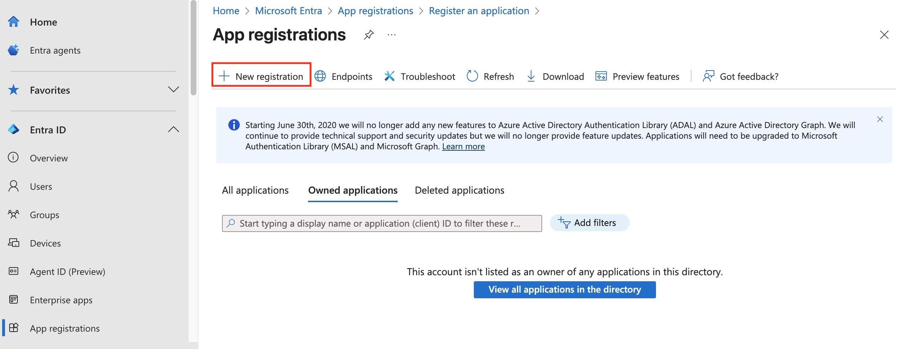
- In the Register an application screen, enter/select the following, then click Register.:
- Name: [Enter a name, e.g., Zebra Identity Guardian]
- Supported account type: Accounts in this organizational directory only (Single tenant)
- Redirect URI: Public client/native (mobile & desktop) msauth://com.zebra.mdna.els/
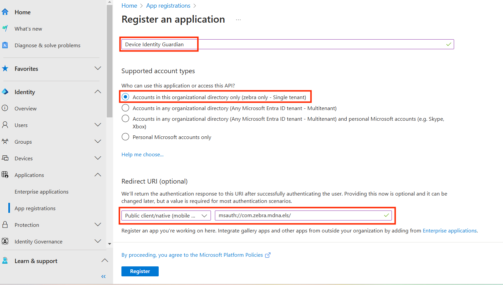
- Navigate to Applications > App registrations > Authentication. Click Add a platform then click Android.
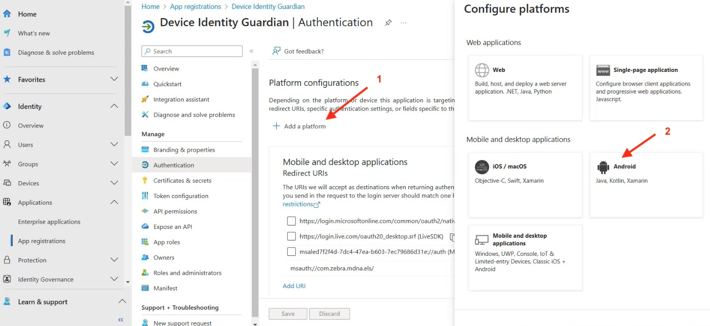
- Enter the following, then click Configure.
- Package name: com.zebra.mdna.els
- Signature hash: KqmK9tYXpw+eW2lke7US3iG9EAQ=
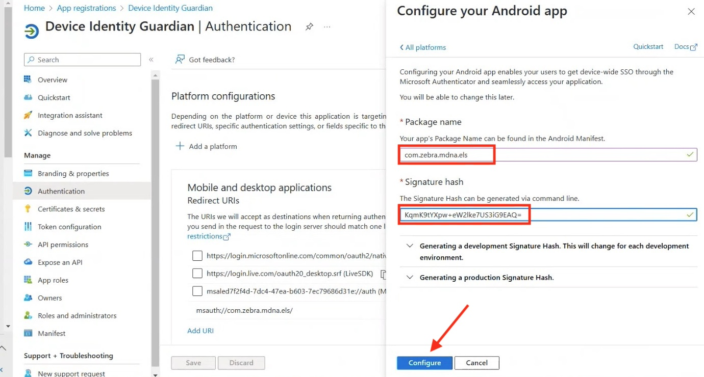
- The Android configuration screen displays. Copy and save the MSAL Configuration; it is required in a later step. Click Done.
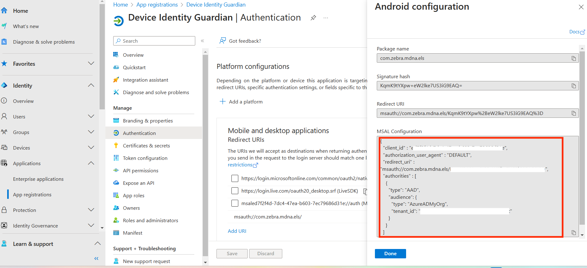
II. Add a 3rd-party Device Compliance Partner
When using Microsoft Authenticator for single sign-on (SSO) in shared device mode, a third-party device compliance partner solution can be integrated with Microsoft Intune. This allows for the collection of device compliance data alongside Intune's own compliance results. The combined data can then be used to develop access policies, offering enhanced protection for the organization and its data. Examples of third-party device compliance partners include solutions such as SOTI MobiControl, VMware Workspace ONE UEM (formerly AirWatch). For guidance on adding a third-party device compliance partner in Intune, consult your EMM or Microsoft's documentation .
III. Configure Microsoft Authenticator App
For optimal use of shared device mode with SSO through Microsoft Authenticator, ensure the Microsoft Authenticator app is installed on the devices. This facilitates automatic SSO single sign-in and single sign-out across Microsoft apps on the device.
To install and configure Microsoft Authenticator app:
Download and install the Microsoft Authenticator app from Google Play via an EMM, such as SOTI MobiControl, VMware Workspace ONE UEM, or Microsoft Intune.
In the Microsoft Entra ID admin center, navigate to Applications > App registrations > Overview and record the tenant ID.
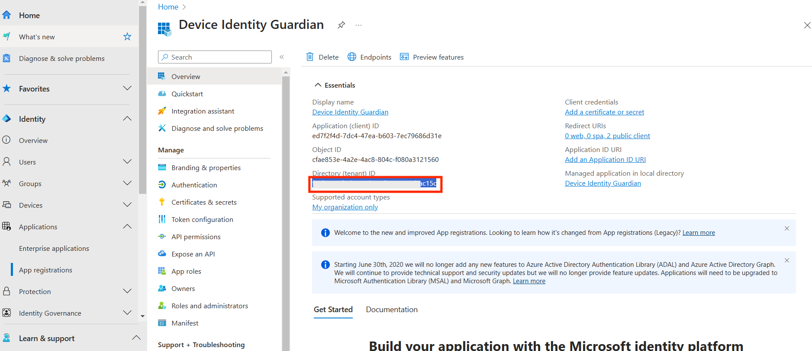
Retrieve the tenant IDIn the EMM, open Managed App Config for the Microsoft Authenticator app and enter the following:
- Shared Device Mode: [Toggle to enable]
- Shared Device Mode Tenant Identifier: [Enter the tenant ID recorded from the previous step]
- Shared Device Mode Registration token: %SHAREDDEVICE_REG_TOKEN%
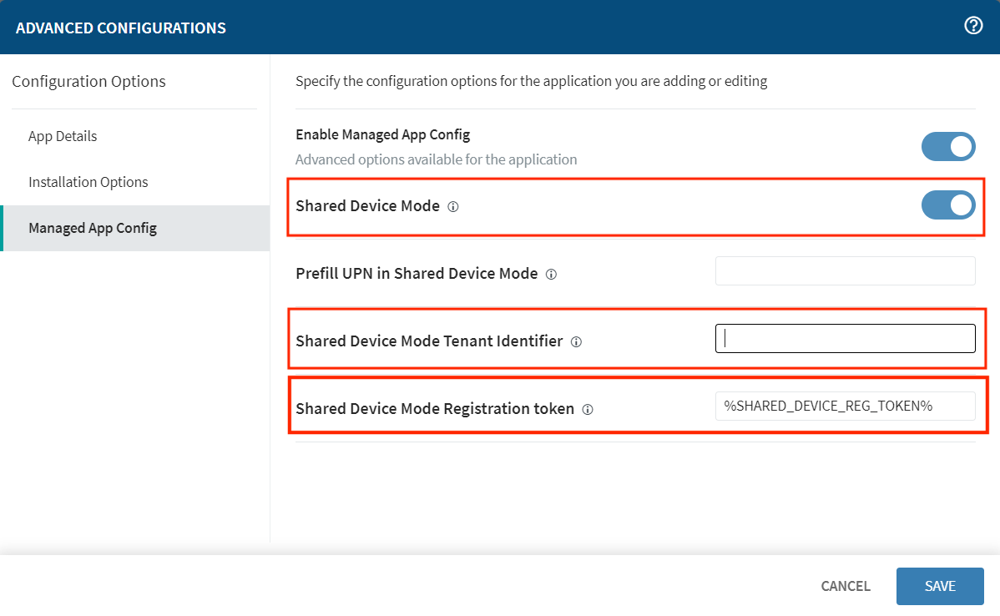
_Sample of Managed App Config from SOTI MobiControl. Other EMMs may vary.
Click Save.
IV. Configure Zebra Identity Guardian App
To enable user access to the device through SSO, install and set up Identity Guardian on the devices:
- Deploy and install the Zebra Identity Guardian app on the devices.
- Launch the app using an EMM. This step must be performed at least once.
- Enter the Managed Configuration settings for the app via your EMM:
- Select Application Mode: Authentication
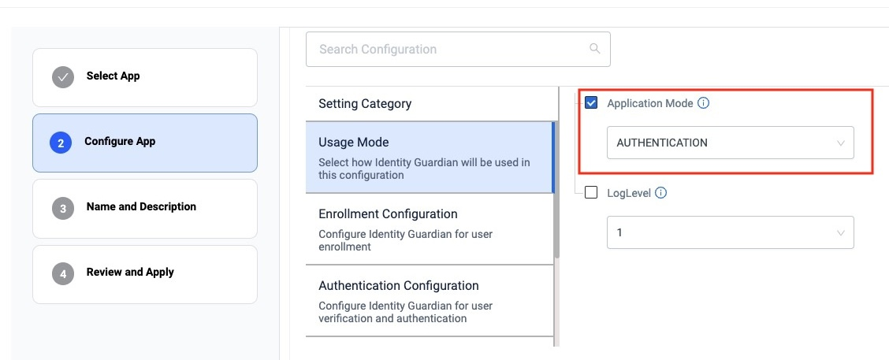
zDNA Cloud Managed Config - Configure the Verification Setup to validate the user access:
- Primary Authentication Factor: SSO
- Secondary Authentication Factor: [Select FACE, PASSCODE, SSO or NONE]
- Fallback Authentication Factor: [Select FACE, PASSCODE, NONE, SSO or ADMIN BYPASS PASSCODE]
- Primary Authentication Timeout: [Enter value in ms, e.g. "300000"]
- Fallback Authentication Timeout: [Enter value in ms, e.g. "300000"]
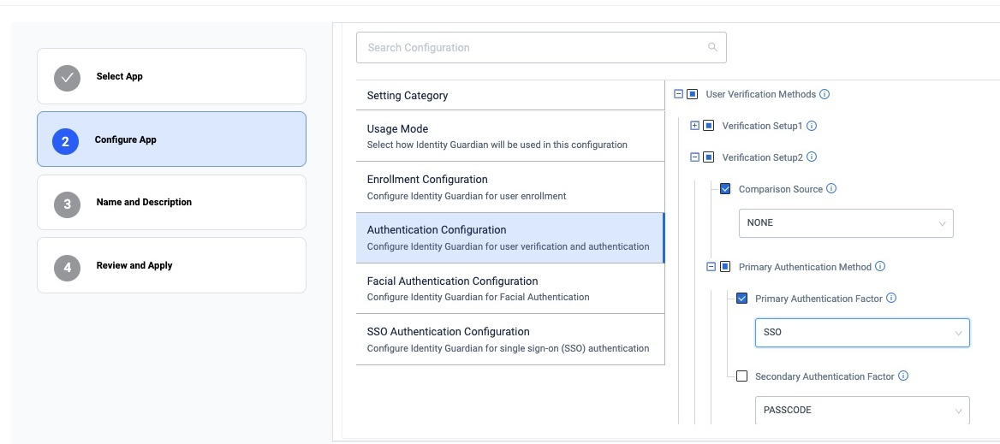
zDNA Cloud Managed Config sample screen
- Configure the Lock-screen Event options:
- On Unlock:
- Verification Setup: [Enter the desired authentication scheme, e.g. "Verification Setup1"]
- On Reboot:
- Verification Setup: [Enter the desired authentication scheme, e.g. "Verification Setup1"]
- On AC power connected:
- Verification Setup: [Enter the desired authentication scheme, e.g. "Verification Setup1"]
- On AC power disconnected:
- Verification Setup: [Enter the desired authentication scheme, e.g. "Verification Setup1"]
- On device manual check in:
- Verification Setup: [Enter the desired authentication scheme, e.g. "Verification Setup1"]
- On user change: - Verification Setup: [Enter the desired authentication scheme, e.g. "Verification Setup1"]
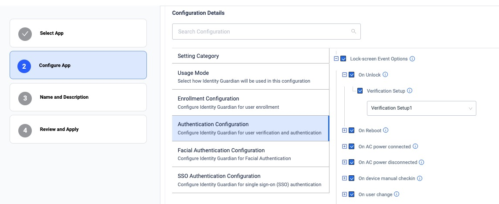
zDNA Cloud Managed Config sample screen
- Configure the SSO Authentication configuration for the app to communicate with Microsoft SSO to authenticate the user:
• Single Sign On Provider: Microsoft
• Authentication Protocol: OAuth 2.0 (OIDC)
• Scope: [Enter the string based on the SSO server settings]
• Configuration Settings: [Copy the MSAL Configuration from step I.5 and insert it into this field. Then:
• Add the key-value pairs forbroker_redirect_uri_registeredandshared_device_mode_supportedas shown in the sample below. This enables the Microsoft Authenticator app to register the device in shared device mode.
• Remove theaudienceelement along with all its child elements and their values.
• Enter theauthority_urlretrieved from Applications > App registrations > Overview. Click on Endpoints to view it.]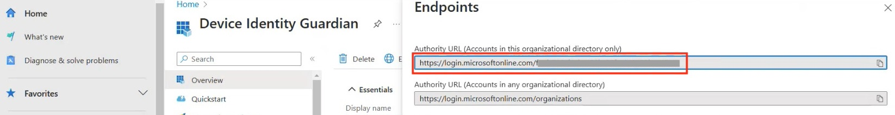
Retrieveauthority_urlendpoint
Ensure your Configuration Settings entered resembles this sample{ "client_id" : "[Your client ID populated]", "authorization_user_agent" : "DEFAULT", "redirect_uri" : "msauth://com.zebra.mdna.els/ AbcB123Xab%c123a3xyz123ABCXYZ%12", "account_mode" : "SINGLE", "broker_redirect_uri_registered": true, "shared_device_mode_supported": true, "authorities" : [ { "type": "AAD", "authority_url": "[ENTER YOUR AUTHORITY URL]" } ] } - Userid identifier: [Enter the claim specifying the value to be displayed as the user name in Identity Guardian, e.g. preferred_username. Retrieve this from the Microsoft Entra ID admin center by navigating to Applications > App Registrations > Token configuration. Click Add optional claim and select ID for the token type.]
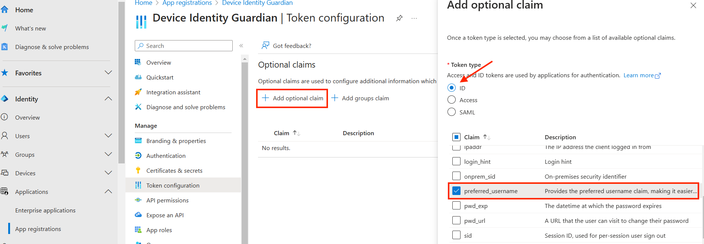
Claim used to display the user name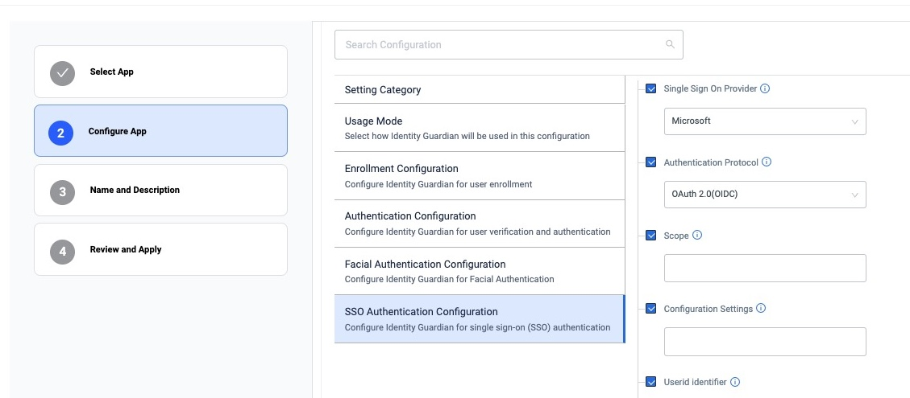
zDNA Cloud Managed Config
- Select Application Mode: Authentication
V. Configure Role Mapping
Configure built-in or custom attributes as claims in Microsoft Entra ID, which are then sent to your application in the SSO response for mapping to application-specific roles.
- In the Microsoft Entra admin center, navigate to Entra ID > App registrations. Click on your application in the list.
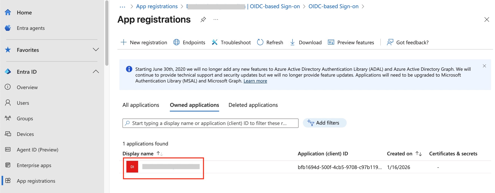
- In the Essentials section, click the name of your app under Managed application in local directory.
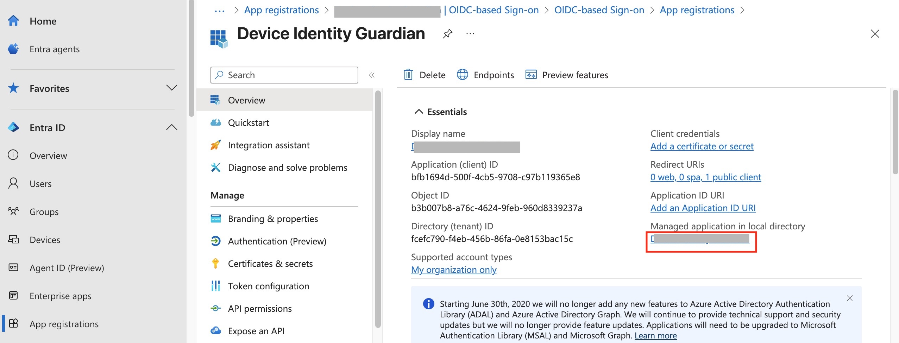
- Under Manage, click Single sign-on. Under Attributes & Claims, click Edit.
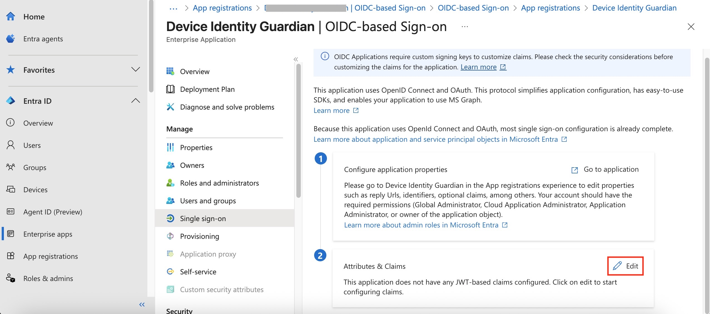
- Add a built-in attribute to the token as a claim. Click Add new claim.
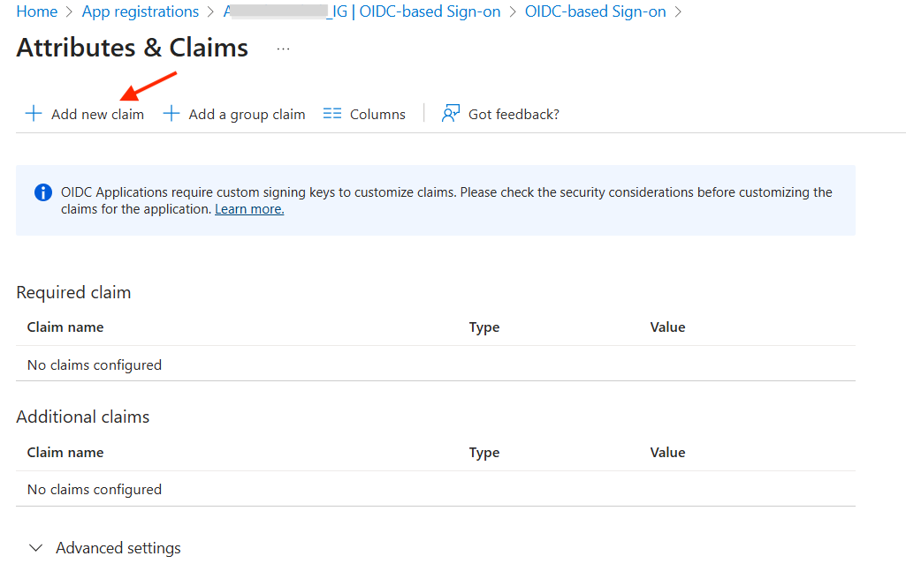
- Enter or select the following, then click Save:
- Name: [Enter a name for the claim. Record this case-sensitive value, as it serves as the SSO Key in Identity Guardian's SSO Mapping configuration for a later step.]
- Name format: Basic
- Source: Attribute
- Source attribute: [Select the appropriate built-in attribute.]
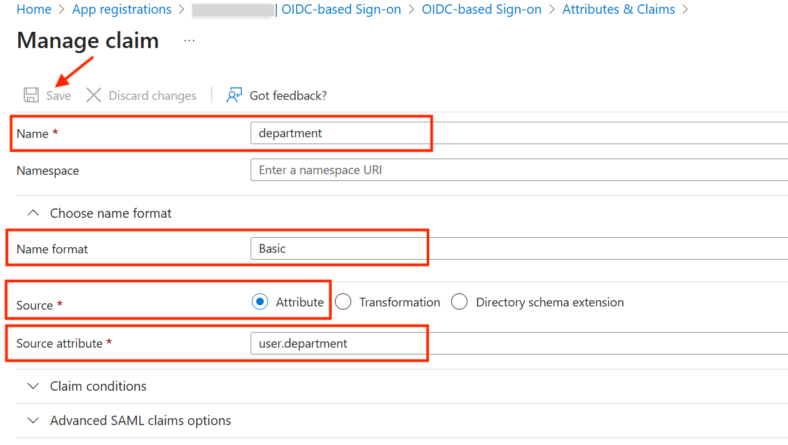
- Repeat the previous step for all built-in attributes to be added.
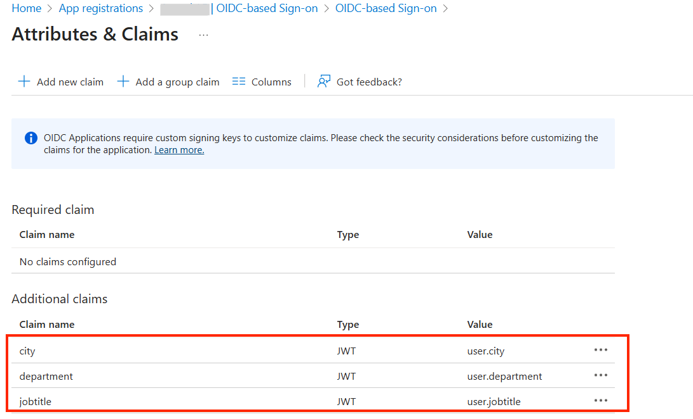
- Update the application manifest to accept these claims. Navigate to Entra ID > App registrations. Select your app under Owned applications.
- In the left menu, select Manifest under Manage to open the app manifest.
- Locate the following keys and set them to the specified values, then click Save:
- acceptMappedClaims: true
- isFallbackPublicClient: true
- Configure role(s) for each user. Navigate to Entra ID > Users.
- Search for the user to assign the role, then click on the user name from the results.
- Click Edit Properties.
- Click Job Information.
- For the Department field, enter the desired value. Record this case-sensitive value, as it serves as the SSO Value in Identity Guardian's SSO Mapping configuration for a later step. Make any other required edits for the user, including multiple roles if needed, then click Save.
- Enter the Managed Configuration settings for SSO Mapping via your EMM:
- SSO Mapping - Tick to enable the recognition and mapping of the Single Sign-On (SSO) response to application-specific roles. Click Add Role Identifier as needed to add additional roles.
- Role Identifier - Establishes links between roles in SSO responses and their corresponding roles within the Identity Guardian app.
- Identity Guardian Role Name - Enter the Identity Guardian user role to be assigned based on SSO response during user sign-in
- Key-value Pair for Role Assignment - Add one or more SSO key-value pairs to identify and map users to a predefined Identity Guardian user role. Click Add SSO Key-Value Pair as needed.
- SSO Key-Value Pair - Enable this option to assign a user based on a specific key-value pair received in the SSO response. - SSO Key - Enter the attribute key from the SSO response (from step 5). - SSO Value - Enter the corresponding attribute value(s) (from step 14). To assign multiple values, separate them with a comma.
- SSO Mapping - Tick to enable the recognition and mapping of the Single Sign-On (SSO) response to application-specific roles. Click Add Role Identifier as needed to add additional roles.
- See Managed Configurations to configure any other non-SSO settings.
- Deploy the Managed Configurations to the devices through your EMM.
When a device receives the new configurations, Zebra Identity Guardian activates the lock screen. The user must then authenticate via Single Sign-On (SSO) to access the device. For more details, see User Guide.
PingID
This section provides guidance to integrate Identity Guardian with PingID.
To enable user access to the device through SSO, install and set up Identity Guardian on the devices:
- Deploy and install Zebra Identity Guardian app on the devices.
- Launch the app using an EMM. This step must be performed at least once.
- Enter the Managed Configuration settings for the app via your EMM:
- Select the application mode:
- Application Mode: Authentication zDNA Cloud Managed App Config
- Configure the Verification Setup to validate the user access:
- Primary Authentication Factor: SSO
- Secondary Authentication Factor: [Select FACE, PASSCODE, or NO_COMPARISON]
- Fallback Authentication Factor: [Select FACE, PASSCODE, NONE, SSO or ADMIN BYPASS PASSCODE]
- Primary Authentication Timeout: [Enter value in ms, e.g. "300000"]
- Fallback Authentication Timeout: [Enter value in ms, e.g. "300000"] zDNA Cloud Managed Config
- Configure the Lock-screen Event options:
- On Unlock:
- Verification Setup: [Enter the desired authentication scheme, e.g. "Verification Setup1"]
- On Reboot:
- Verification Setup: [Enter the desired authentication scheme, e.g. "Verification Setup1"]
- On AC power connected:
- Verification Setup: [Enter the desired authentication scheme, e.g. "Verification Setup1"]
- On AC power disconnected:
- Verification Setup: [Enter the desired authentication scheme, e.g. "Verification Setup1"]
- On device manual check in:
- Verification Setup: [Enter the desired authentication scheme, e.g. "Verification Setup1"]
- On user change:
- Verification Setup: [Enter the desired authentication scheme, e.g. "Verification Setup1"] zDNA Cloud Managed Config
- Configure the SSO Authentication Configuration:
- Single Sign On Provider: PingId
- Authentication Protocol: OAuth 2.0 (OIDC)
- Scope: openid email profile
- Userid Identifier: [Specify the user key for identifying the signed-in user]
- Configuration Settings: [Enter the specified string, but replace the following values with those from your own SSO response: logoutURL, revokeURL, tokenURL, authorizationURL, clientId, userInfoUrl]
zDNA Cloud Managed App Config{ "redirectURI" : "com.zebra.mdna.els:/loginComplete", "logoutURL" : "[enter your logout URL]", "revokeURL" : "[enter your revoke URL]", "tokenURL" : "[enter your token URL]", "authorizationURL" : "[enter your authorization URL]", "clientAuthType" : 0, "clientId" : "[enter your clientID]", "certificatePhrase" : "", "userInfoUrl" : "[enter your userInfo URL]", "certificate" : "" }
- Select the application mode:
- If mapping the SSO response to application-specific roles, enter the following (see Managed Configurations for more information):
- Configuration Role Identification - Enables the recognition and mapping of the Single Sign-On (SSO) response to application-specific roles. Click Add Role Identifier as needed.
- Role Identifier - Establishes links between roles in SSO responses and their corresponding roles within the Identity Guardian app.
- Identity Guardian Role Name - Enter the Identity Guardian user role to be assigned based on SSO response during user sign-in
- Key-value Pair for Role Assignment - Add one or more SSO key-value pairs to identify and map users to a predefined Identity Guardian user role. Click Add SSO Key-Value Pair as needed.
- SSO Key-Value Pair - Choose whether the SSO response, which contains the user key and values, should be mapped to a corresponding user role in Identity Guardian
- SSO Key - Enter the SSO key to map it to an Identity Guardian role.
- SSO Value - Enter the SSO value(s) to map to the Identity Guardian role. Use commas to separate multiple entries. zDNA Cloud Managed Config
- Configuration Role Identification - Enables the recognition and mapping of the Single Sign-On (SSO) response to application-specific roles. Click Add Role Identifier as needed.
- See Managed Configurations to configure any other non-SSO settings.
- Deploy the Managed Configurations to the devices through your EMM.
When a device gets updated with the new configurations, Zebra Identity Guardian activates the lock screen. The user is then required to authenticate themselves using Single Sign-On (SSO) to gain access to the device. See User Guide for more information.
Okta
This section provides guidance to integrate Identity Guardian with Okta using OAuth 2.0 (OIDC) protocol.
I. Register Zebra Identity Guardian
II. Configure Zebra Identity Guardian App
I. Register Zebra Identity Guardian
In the Okta web portal, create a new application. From the left menu, select Applications > Applications. Click on Create App Integration.
Select OIDC, then select Native Application. Click Next.
Enter the App integration name. If needed, select Refresh Token, which contains credentials that can be used to obtain a new access token without requiring the user to re-authenticate. This is particularly useful for maintaining a user’s session without requiring them to log in again after their access token expires. For Sign-in redirect URIs and Sign-out redirect URIs, enter the following:
com.zebra.mdna.els:/loginCompleteFor Controlled access, select Allow everyone in your organization to access. Then select Enable immediate access with Federation Broker Mode. Click Save.
From Security > API, click on Default.
These scopes are enabled by default: openid, email, profile, offline_access. Click Add Scope.
Click on the Access Policies tab, then click on Add Policy.
Enter a name and description. Click Create Policy.
The policy is added. Click Add Rule.
Enter a name for the rule and fill out the remaining fields as needed. Click Create rule.
The rule is added.
Click the Claims tab to create a user role. This role will be used for role mapping in Identity Guardian. Click Add Claim.
Enter a name. For Include in token type select ID Token, Value type select Groups, select a filter and enter "ADMIN" in the text field, and for Include In select Any scope.Click Create.
The claim is added.
Go to Applications > Applications. Copy the Client ID of the application created in step 3, e.g. ZebraIdentityGuardian. This will be needed for a later step. Then, click on the Assign Users to App button to add users to access the created application.
In the Applications section, select the application created. In the People section, select the user. Click Next to assign the application to the user.
Go to Security > API. Click on default.
The Settings screen appears. Click on the Metadata URI link.
The browser opens displaying the Metadata URI, which includes the Identity Guardian end point APIs needed for Okta operations. Use the JSON format below to build the SSO configuration needed for Identity Guardian. Replace the placeholders, indicated by angled brackets
<>, With the appropriate values obtained from the Metadata URI. This JSON data will be used in the next section to complete the SSO configuration.{ "authorizationScope": "openid, email, profile, offline_access", "redirectURI": "com.zebra.mdna.els:/loginComplete", "logoutURL": "<Enter the value specified for 'end_session_endpoint'>", "tokenURL": "<Enter the value specified for 'token_endpoint'>", "authorizationURL": "<Enter the value specified for 'authorization_endpoint'>", "clientAuthType": 0, "clientId": "<Enter the Client ID retrieved from step 15 above>", "certificatePhrase": "", "userInfoUrl": "<Enter the value specified for 'issuer'>/v1/userinfo", "revokeURL": "<Enter the value specified for 'revocation_endpoint'>", "certificate": "", "clientSecret": "", "enablePKCE": true }
II. Configure Zebra Identity Guardian App
To enable user access to the device through SSO, install and set up Identity Guardian on the devices:
Deploy and install Zebra Identity Guardian app on the devices.
Launch the app using an EMM. This step must be performed at least once.
Enter the Managed Configuration settings for the app via your EMM:
- Select the application mode:
- Application Mode: Authentication zDNA Cloud Managed Config
- Configure the Verification Setup to validate the user access:
- Primary Authentication Factor: SSO
- Secondary Authentication Factor: [Select FACE, PASSCODE, SSO or NONE]
- Fallback Authentication Factor: [Select FACE, PASSCODE, NONE, SSO or ADMIN BYPASS PASSCODE]
- Primary Authentication Timeout: [Enter value in ms, e.g. "300000"]
- Fallback Authentication Timeout: [Enter value in ms, e.g. "300000"] zDNA Cloud Managed Config
- Select the application mode:
- Configure the Lock-screen Event options:
- On Unlock:
- Verification Setup: [Enter the desired authentication scheme, e.g. "Verification Setup1"]
- On Reboot:
- Verification Setup: [Enter the desired authentication scheme, e.g. "Verification Setup1"]
- On AC power connected:
- Verification Setup: [Enter the desired authentication scheme, e.g. "Verification Setup1"]
- On AC power disconnected:
- Verification Setup: [Enter the desired authentication scheme, e.g. "Verification Setup1"]
- On device manual check in:
- Verification Setup: [Enter the desired authentication scheme, e.g. "Verification Setup1"]
- On user change:
- Verification Setup: [Enter the desired authentication scheme, e.g. "Verification Setup1"] zDNA Cloud Managed Config
- Configure the SSO Authentication Configuration for the app to communicate with Microsoft SSO to authenticate the user:
- Single Sign On Provider: Okta
- Authentication Protocol: OAuth 2.0 (OIDC)
- Scope: [Enter the string based on the SSO server settings, e.g. "openid email profile offline_access"]
- Configuration Settings: [Enter the JSON data from the last step from the previous section I. Register Zebra Identity Guardian. A sample is shown below]
zDNA Cloud Managed Config{ "authorizationScope": "openid email profile offline_access", "redirectURI" : "com.zebra.mdna.els:/loginComplete", "logoutURL" : "your_logout_URL", "tokenURL" : "your_token_URL", "authorizationURL" : "your_authorization_URL", "clientAuthType" : 0, "clientId" : "your_client_ID", "certificatePhrase" : "", "userInfoUrl" : "your_userInfo_URL", "revokeURL" : "your_revoke_URL", "certificate" : "", "clientSecret":"", "enablePKCE": true } If mapping the SSO response to application-specific roles, enter the following (see Managed Configurations for more information):
- Configuration Role Identification - Enables the recognition and mapping of the Single Sign-On (SSO) response to application-specific roles. Click Add Role Identifier as needed.
- Role Identifier - Establishes links between roles in SSO responses and their corresponding roles within the Identity Guardian app.
- Identity Guardian Role Name - Enter the Identity Guardian user role to be assigned based on SSO response during user sign-in
- Key-value Pair for Role Assignment - Add one or more SSO key-value pairs to identify and map users to a predefined Identity Guardian user role. Click Add SSO Key-Value Pair as needed.
- SSO Key-Value Pair - Choose whether the SSO response, which contains the user key and values, should be mapped to a corresponding user role in Identity Guardian
- SSO Key - Enter the SSO key to map it to an Identity Guardian role.
- SSO Value - Enter the SSO value(s) to map to the Identity Guardian role. Use commas to separate multiple entries. zDNA Cloud Managed Config
- Configuration Role Identification - Enables the recognition and mapping of the Single Sign-On (SSO) response to application-specific roles. Click Add Role Identifier as needed.
See Managed Configurations to configure any other non-SSO settings.
Deploy the Managed Configurations to the devices through your EMM.
When a device gets updated with the new configurations, Zebra Identity Guardian activates the lock screen. The user is then required to authenticate themselves using Single Sign-On (SSO) to gain access to the device. See User Guide for more information.
EMM Guidance
Deploy and configure Identity Guardian on devices using an Enterprise Mobility Management (EMM) system, such as Zebra DNA Cloud or a third party system, which supports Managed Configurations.
After installation, Identity Guardian must be launched for the configurations to take effect.
Generic Setup Process Using EMM:
Enroll the devices to the EMM.
Upload the required APKs to the EMM: This can be done via Android Enterprise or the EMM's App Store.
Add the Identity Guardian APK to the EMM. Ensure the Identity Guardian app is configured to auto-launch after installation. The EMM system may offer the option to auto-launch the app. If this option is not available, the following commands may be used to launch Identity Guardian:
For Android, such as from another app, use this command:
adb shell am start -n com.zebra.mdna.els/com.zebra.mdna.els.userEnrollment.activity.EnrollmentActivityFor an EMM, such as VMware Workspace ONE UEM (AirWatch), use this command to launch via intent:
mode=explicit,broadcast=false,action=android.intent.action.MAIN,package=com.zebra.mdna.els,class=com.zebra.mdna.els.userEnrollment.activity.EnrollmentActivity
If barcode printing or sharing is needed on Shared Devices, add the zCreator APK to the EMM.
- If the EMM kiosk configuration is being used, make sure to include the zCreator app package name to the allowlist:
com.zebra.mdna.zcreator
- If the EMM kiosk configuration is being used, make sure to include the zCreator app package name to the allowlist:
Create and configure application policies: Use Managed Configurations to configure the necessary settings for Identity Guardian and zCreator (if applicable). Refer to the following guides:
- For Shared Devices: Choose the appropriate enrollment type:
- Standard Enrollment - Separate Enrollment and Authentication Profiles are required.
- Self-Enrollment - Single profile combines enrollment and authentication configurations
- For Personally Assigned Devices: Single profile combines enrollment and authentication configurations; see Personally Assigned Device.
- For Shared Devices: Choose the appropriate enrollment type:
Assign and apply the application policies:
- Shared Devices:
- For Standard Enrollment, deploy the Enrollment Profile on the dedicated enrollment device and the Authentication Profile on the shared device.
- For Self-Enrollment, deploy the unified Authentication Profile directly to the shared device.
- Personally Assigned Devices: Deploy the single profile to the device.
- Shared Devices:
Guide Users through Enrollment and Authentication: Users proceed through the enrollment process on the device by following the prompts. After enrollment completion, they can authenticate to sign in to the device based on the Authentication Configuration settings set by their administrator.
- Shared Devices:
- Standard Enrollment: Users enroll on a dedicated enrollment device and authenticate on a separate shared device; see standard enrollment and authentication.
- Self-Enrollment: Users complete both enrollment and authentication on the same shared device; see self-enrollment and authentication.
- Personally Assigned Devices: Users complete both enrollment and authentication on their personally assigned device; see personal device user enrollment and authentication.
Video Demonstrations for EMM Configuration
The following subsections provide video demonstrations tailored for specific EMMs. Within the videos, profiles are created based on user access:
- Shared devices - Create two separate profiles based on the Application Mode selected under the Usage Mode section:
- Enrollment - This creates unique user barcodes for authentication and is required when implementing facial biometrics.
- Authentication - This configures the authentication methods employed for users to sign into the device.
- Personally assigned devices - Create a profile by selecting Personally Assigned from Application Mode under the Usage Mode section. This creates a profile encompassing both enrollment and authentication configurations for personally assigned devices.
Zebra DNA Cloud
This section provides video demonstrations to guide through the process of setting up Identity Guardian using the Zebra DNA Console.
Create and Deploy Enrollment Profile:
This first video guides through the process of creating and deploying an enrollment profile, specifically for a shared device. Learn how to define configurations for a user's first-time enrollment, including registering facial features, obtaining user role data, setting up a pin code, and more.
Note: For personally assigned devices, select Personally Assigned from Application Mode under the Usage Mode section. This creates a profile encompassing both enrollment and authentication configurations.
Create and Deploy Authentication Profile:
This second video walks through the process of creating and deploying an authentication profile, specifically for a shared device. It guides through the process of establishing configurations for user authentication each time a user signs into the device. These configurations include scanning a barcode, setting up SSO, defining the passcode, among others. The enrollment profile, created from the previous video, can be used as a template to modify and create this authentication profile.
User Authentication:
This video demonstrates various scenarios of user device authentication. In this example, one group of authentication settings is applied to a shared device with the following configurations:
- Comparison source: Barcode
- Primary authentication: SSO
- Secondary authentication: Passcode
- Fallback authentication: Admin bypass passcode
SOTI MobiControl
This video provides step-by-step instructions for setting up Identity Guardian on shared devices using SOTI MobiControl. It covers:
- Deploying the Identity Guardian APK file
- Automatically launching the app
- Creating and applying an enrollment profile
- Creating and applying an authentication profile
Note: For personally assigned devices, select Personally Assigned from Application Mode under the Usage Mode section. This creates a profile that includes both enrollment and authentication configurations.
VMware Workspace ONE UEM
This video provides step-by-step instructions for setting up Identity Guardian on shared devices using VMware Workspace One UEM. This guide covers the following:
- Deploying the Identity Guardian APK file
- Creating and applying an enrollment profile
- Automatically launching Identity Guardian
After applying an enrollment profile, this next video continues with:
- Creating and applying an authentication profile
- Automatically launching Identity Guardian to implement the changes
Note: For personally assigned devices, select Personally Assigned from Application Mode under the Usage Mode section. This creates a profile that includes both enrollment and authentication configurations.
Microsoft Intune
This video provides step-by-step instructions for installing and setting up Identity Guardian with Microsoft Intune, demonstrating the following:
- Deploying the Identity Guardian APK file
- Creating and applying an enrollment profile
- For the app configuration policy, first modify the sample Microsoft Intune JSON file according to your desired settings. Refer to Managed Configurations to update the "value" field in the JSON file for each configuration option based on its key. For example, for the key
APPLICATION_MODE, enter the valueENROLLMENTto enroll shared devices. Then, copy and paste the entire JSON content into the designated field as instructed in the video.- For SSO Authentication Configuration, in addition to replacing the appropriate value for the key
ssoProvider, enter the appropriate values for the following keys:ssoScope,client_id,redirect_uri,authority_url, andssoUseridIdentifier.
- For SSO Authentication Configuration, in addition to replacing the appropriate value for the key
- For the app configuration policy, first modify the sample Microsoft Intune JSON file according to your desired settings. Refer to Managed Configurations to update the "value" field in the JSON file for each configuration option based on its key. For example, for the key
- Launching Identity Guardian - Copy the XML content to launch Identity Guardian via OEMConfig
Although this applies to shared devices, similar instructions can be followed personally assigned devices by setting Personally Assigned for Application Mode under the Usage Mode section. This creates a profile that includes both enrollment and authentication configurations.
After applying an enrollment profile, this next video continues with:
- Creating and applying an authentication profile for shared devices
- For the app configuration policy, first modify the sample Microsoft Intune JSON file according to your desired settings. Refer to Managed Configurations to update the "value" field in the JSON file for each configuration option based on its key. For example, for the key
APPLICATION_MODE, enter the valueAUTHENTICATIONto authenticate shared devices. Then, copy and paste the entire JSON content into the designated field as instructed in the video.- For SSO Authentication Configuration, in addition to replacing the appropriate value for the key
ssoProvider, enter the appropriate values for the following keys:ssoScope,client_id,redirect_uri,authority_url, andssoUseridIdentifier.
- For SSO Authentication Configuration, in addition to replacing the appropriate value for the key
- For the app configuration policy, first modify the sample Microsoft Intune JSON file according to your desired settings. Refer to Managed Configurations to update the "value" field in the JSON file for each configuration option based on its key. For example, for the key
- Launching Identity Guardian to implement the changes - Copy the XML content for launching Identity Guardian via OEMConfig
42Gears SureMDM
This video walks through the process of setting up Identity Guardian on personally assigned devices using SureMDM. It covers:
- Deploying the Identity Guardian APK file.
- Automatically launching the app.
- Creating a policy to configure the desired settings for enrollment and authentication.
Configuration for Shared Devices:
For shared devices, create two separate configuration profiles based on the selected Application Mode (under the Usage Mode section):
- Enrollment - Creates unique user barcodes for authentication and is required when implementing facial biometrics.
- Authentication - Configures the authentication methods employed for users to sign into the device.
Required Dependency:
The Enable All System Apps option must be deployed to devices. See instructions below.
Accessing Full Identity Guardian Settings:
IMPORTANT: When accessing Identity Guardian Managed Configuration settings through the Profiles feature in the 42Gears dashboard, the available options may be incomplete or missing. To resolve this and access the full set of Identity Guardian Managed Configuration settings, use the Jobs feature instead.
Follow these steps to proceed (Note: Ensure the Identity Guardian APK is uploaded to the SureMDM app store before proceeding.):
- From the 42Gears SureMDM dashboard, click Jobs.
- Choose Android.
- Choose Install Application.
- Click Add App.
- Enable Use Apps from App Store and provide the following:
- Apps: [Select the Identity Guardian app uploaded to the SureMDM app store.]
- App Version: [Select the appropriate app version.]
- Device Path: [Specify the folder path for the install file (default:
/sdcard/).] - Install After Copy: [Enable this option.]
- Launch App Upon Installation: [Enable this option.]
- Adjust any additional settings as needed, then click Done.
Enable All System Apps
The Enable All System Apps option must be deployed to devices to allow dependent apps to run, such as Chrome, zLicenseManager, and DataWedge. To deploy this setting:
- From the 42Gears SureMDM dashboard, click Profiles.
- Click New Profile and select Primary Profile.
- Enter a profile name. Click System Settings and click Configure.
- Click Applications.
- Scroll down and check the option for Enable All System Apps. Click Save.
- From the top menu, click Home. Select the device(s) and click Apply.
- Select the profile created from step 3, then click Apply.
Shared Device
Authentication Process
User authentication on shared devices requires an Authentication Key, an encrypted private key derived from the organization’s certificate and configured through Identity Guardian's Managed Configuration. To support seamless cryptographic key rotation, an optional Alternate Authentication Key can also be configured. This provides a migration period where both the primary and alternate keys are active, ensuring zero downtime for end-users. For details on key generation, see Authentication Configuration. The target device must be provisioned with the proper Authentication configuration.
When a user scans their enrollment barcode or NFC card, the system decrypts the stored data using either the Authentication Key or Alternate Authentication Key.
- Security Warning: The data cannot be decrypted or reverse-engineered on any device without the corresponding authentication key. It is essential that organizations maintain the security and confidentiality of the authentication key to ensure protection of user data.
IMPORTANT:Administrators MUST provision their own enrollment and authentication keys on the respective devices used for enrollment and authentication. Failure to do so will result in Identity Guardian using default keys, which may allow any device with those keys to decrypt the barcode, compromising security.